SEC 1.0
Scope
Standard Purpose & Application: API RP 571 provides guidance to inspection and materials personnel on identification, causes, susceptibility, morphology, and inspection techniques for damage mechanisms affecting fixed equipment in refining and petrochemical industries.
| Section | Description |
|---|---|
| Purpose | Discusses damage mechanisms in refining, petrochemical, and other industrial applications. Acts as a reference for pressure equipment integrity. |
| Key Applications | Identification of damage, inspection strategies, IOWs, CCDs, RBI, FFS assessments, incident investigations, and NDE techniques. |
| Standard Format | Name, Description, Affected Materials, Critical Factors, Affected Units/Equipment, Appearance/Morphology, Prevention/Mitigation, Inspection/Monitoring, Related Mechanisms, References. |
SEC 2.1
Definitions
Official Metallurgical & Damage Definitions: Common technical terms and metallurgical terminology referenced across all damage mechanisms.
| Term | Definition |
|---|---|
| austenitic | Metallurgical structure in 300 series SS and Ni-based alloys; face-centered cubic and generally nonmagnetic. |
| austenitic stainless steels | 300 series SS (e.g., Types 304, 316, 321, 347) with an austenitic structure. |
| carbon steel | Alloy of iron and carbon without intentionally added alloying elements. |
| diethanolamine (DEA) | Chemical used in amine treating to remove H₂S and CO₂ from hydrocarbon streams. |
| diglycolamine (DGA) | Chemical used in amine treating to remove H₂S and CO₂ from hydrocarbon streams. |
| duplex stainless steel | Family of stainless steels (e.g., Alloys 2205, 2304, 2507) containing a mixed austenitic-ferritic structure. |
| ferritic | Metallurgical structure in carbon/low-alloy steels and 400 series SS; body-centered cubic and generally magnetic. |
| ferritic stainless steels | Family of 400 series SS (e.g., Types 405, 409, 410S, 430, 442, 446). |
| heat-affected zone (HAZ) | Portion of the base metal adjacent to a weld whose microstructure and mechanical properties were changed by the heat of welding. |
| high-strength low-alloy (HSLA) steel | Carbon steels with moderate alloying for higher strength; sensitive to hydrogen embrittlement. |
| low-alloy steel | Family of steels with up to 9% chromium and other additions for high-temperature strength and creep resistance. |
| martensitic | Hard metallurgical structure in some 400 series SS or in rapidly cooled carbon/low-alloy steels. Usually requires tempering. |
| martensitic stainless steel | Family of 400 series SS (e.g., Types 410, 416, 420, 440). |
| methyl diethanolamine (MDEA) | Chemical used in amine treating to remove H₂S and CO₂ from hydrocarbon streams. |
| monoethanolamine (MEA) | Chemical used in amine treating to remove H₂S and CO₂ from hydrocarbon streams. |
| nickel-based | Family of alloys containing nickel as a major alloying element (>30% Ni). |
| stainless steel | Alloy of iron with at least 10.5% chromium. Categories: austenitic, ferritic, martensitic, and duplex. |
SEC 2.2
Acronyms and Abbreviations
Industry Acronyms & Nomenclature: Complete catalog of technical abbreviations, chemical formulas, and NDE terminology used in API RP 571.
| Acronym | Definition |
|---|---|
| ABSA | Angle beam spectral analysis |
| ACFM | Alternating current field measurement |
| ACSCC | Alkaline carbonate stress corrosion cracking |
| AET | Acoustic emission testing |
| AGO | Atmospheric gas oil |
| Al | Aluminum |
| ARH | Acid relief header |
| ARN | Acid relief neutralizer |
| ASCC | Alkaline stress corrosion cracking |
| AUBT | Automated ultrasonic backscatter testing |
| AUT | Automated ultrasonic testing |
| B | Boron |
| BFW | Boiler feedwater |
| C | Carbon |
| C3 | Propane or propylene |
| C4 | Butane or butylene |
| Cat | Catalyst or catalytic |
| CCR | Continuous catalytic reforming |
| CH4 | Methane |
| Cl⁻ SCC | Chloride stress corrosion cracking |
| CO | Carbon monoxide |
| CO2 | Carbon dioxide |
| Cr | Chromium |
| Cu | Copper |
| CuF | Cuprous fluoride |
| CuF2 | Cupric fluoride |
| CUI | Corrosion under insulation |
| CVN | Charpy V-notch |
| CW | Cooling water |
| DEA | Diethanolamine |
| DGA | Diglycolamine |
| DIPA | Diisopropylamine |
| DMW | Dissimilar metal weld |
| DNB | Departure from nucleate boiling |
| ECT | Eddy current testing |
| EMAT | Electromagnetic acoustic transducer |
| FAC | Flow accelerated corrosion |
| FCC | Fluid catalytic cracker |
| Fe | Iron |
| Fe3O4 | Magnetite |
| FeS | Iron sulfide |
| FFS | Fitness-For-Service |
| FGE | Fuel grade ethanol |
| FMR | Field metallographic replication |
| FRP | Fiber-reinforced plastic |
| GWT | Guided wave testing |
| H2 | Diatomic hydrogen gas |
| HAZ | Heat-affected zone |
| HB | Brinell hardness number |
| HCGO | Heavy coker gas oil |
| HCl | Hydrochloric (acid) |
| HCN | Hydrogen cyanide |
| H2CO3 | Carbonic acid |
| HE | Hydrogen embrittlement |
| HF | Hydrofluoric (acid) |
| Hg | Mercury |
| HHPS | Hot high-pressure separator |
| HIC | Hydrogen-induced cracking |
| HP | High pressure |
| HPS | High-pressure separator |
| HRC | Rockwell hardness number |
| HRSG | Heat-recovery steam generator |
| H2S | Hydrogen sulfide |
| HSAS | Heat stable amine salts |
| HSLA | High-strength low-alloy |
| H2SO4 | Sulfuric acid |
| HCO | Heavy cycle oil |
| HTHA | High-temperature hydrogen attack |
| HVGO | Heavy vacuum gas oil |
| ID | Inside diameter |
| IOW | Integrity operating window |
| IRIS | Internal rotating inspection system |
| K.O. or KO | Knock out |
| KOH | Potassium hydroxide |
| LCGO | Light coker gas oil |
| LCO | Light cycle oil |
| LP | Low pressure |
| LPS | Low-pressure separator |
| LVGO | Light vacuum gas oil |
| MAWP | Maximum allowable working pressure |
| MDEA | Methyl diethanolamine |
| MDMT | Minimum design metal temperature |
| MEA | Monoethanolamine |
| MFL | Magnetic flux leakage |
| MIC | Microbiologically influenced corrosion |
| Mn | Manganese |
| Mo | Molybdenum |
| MPT | Minimum pressurization temperature |
| mpy | Mils per year |
| MT | Magnetic particle testing |
| MVP | Materials verification program |
| Na | Sodium |
| NAC | Naphthenic acid corrosion |
| NaOH | Sodium hydroxide |
| Nb | Niobium |
| NDE | Nondestructive examination |
| NFT | Near-field testing |
| NH3 | Ammonia |
| NH4HS | Ammonium bisulfide |
| Ni | Nickel |
| NO2 | Nitrogen dioxide |
| NPSH | Net positive suction head |
| O2 | Oxygen |
| OD | Outside diameter |
| P | Phosphorus |
| PAUT | Phased array ultrasonic testing |
| PEC | Pulsed eddy current |
| PFD | Process flow diagram |
| PMI | Positive materials identification |
| POX | Partial oxidation |
| PREN | Pitting resistance equivalent number |
| PT | Liquid penetrant testing |
| PTA SCC | Polythionic acid stress corrosion cracking |
| PTFE | Polytetrafluoroethylene |
| PVC | Polyvinyl chloride |
| PWHT | Postweld heat treatment |
| RE | Residual element |
| RFT | Remote field testing |
| RT | Radiographic testing |
| S | Sulfur |
| SAW | Submerged-arc welding |
| SCC | Stress corrosion cracking |
| SEM | Scanning electron microscope |
| Si | Silicon |
| SLOFEC | Saturated low-frequency eddy current |
| SO2 | Sulfur dioxide |
| SOHIC | Stress-oriented hydrogen-induced cracking |
| SRB | Sulfate-reducing bacteria |
| SRC | Stress relaxation cracking |
| SRU | Sulfur recovery unit |
| SS | Stainless steel |
| SSC | Sulfide stress cracking |
| SW | Sour water |
| SWS | Sour water stripper |
| SWUT | Shear wave ultrasonic testing |
| TAN | Total acid number |
| Ti | Titanium |
| TOFD | Time of flight diffraction |
| UT | Ultrasonic testing |
| UTS | Ultimate tensile strength |
| V | Vanadium |
| VT | Visual inspection |
| WFMT | Wet fluorescent magnetic particle testing |
| Zn | Zinc |
3.1
885 °F (475 °C) Embrittlement
Description of Damage: A loss of ductility and fracture toughness in stainless steels containing a ferrite phase due to high-temperature exposure.
| Damage Type | 885 °F (475 °C) Embrittlement |
| Affected Materials |
|
| Main Cause | Exposure to temperatures between 600 °F and 1000 °F (315 °C to 540 °C), causing the formation of an embrittling metallic phase. |
| Critical Factors |
|
| Locations |
|
| Appearance |
|
| Prevention |
|
| Inspection |
|
| Related | Sigma phase embrittlement (3.56). |
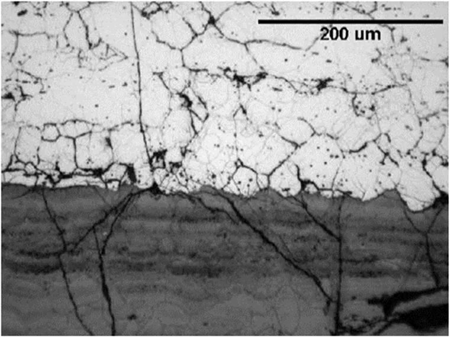
Figure 3-1-1 — Sample of cracked material with intergranular cracks
3.2
Amine Corrosion
Uniform / Localized ThinningDescription of Damage: Localized corrosion of carbon steel in amine treating processes, driven by acid gases and amine degradation products.
| Damage Type | Amine Corrosion |
| Affected Materials |
|
| Main Cause | Dissolved acid gases (CO2, H2S), heat stable amine salts, degradation products, and oxygen leaks in amine systems. |
| Critical Factors |
|
| Locations |
|
| Appearance |
|
| Prevention |
|
| Inspection |
|
| Related | Amine SCC (3.3). |
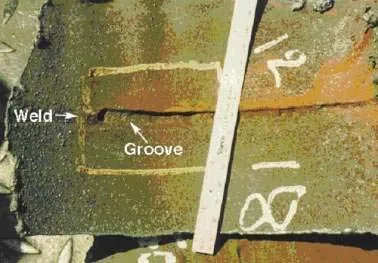
Figure 3-2-1 — Localized amine corrosion at the weld found in piping from the reboiler to the regenerator tower in an MEA unit. Many other similar cases were found, some going as deep as half
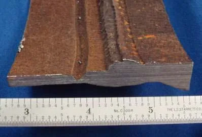
Figure 3-2-2 — Hot lean amine corrosion of carbon steel attributed
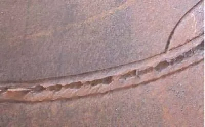
Figure 3-2-3 — Preferential weld corrosion in lean amine. (Reference 5)
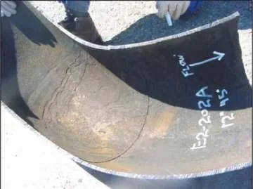
Figure 3-2-4 — Preferential corrosion in an amine regenerator reboiler return elbow. (Reference 6)
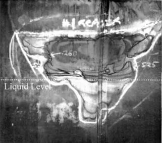
Figure 3-2-5 — Corrosion near the liquid level in a reboiler exchanger shell from an amine
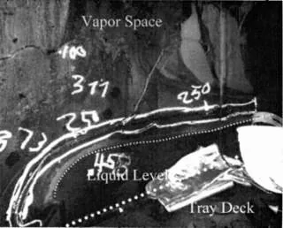
Figure 3-2-6 — Corroded amine regenerator column shell near a downcomer. (Numbers drawn on
3.3
Amine Stress Corrosion Cracking
Environmental CrackingDescription of Damage: Cracking of steels caused by the combined action of tensile stress and aqueous alkanolamine solutions used to absorb acid gases.
| Damage Type | Amine Stress Corrosion Cracking (SCC) |
| Affected Materials | Carbon steel and low-alloy steels. |
| Main Cause | High residual tensile stresses (from welding or cold working) combined with exposure to amine solutions. |
| Critical Factors |
|
| Locations |
|
| Appearance |
|
| Prevention |
|
| Inspection |
|
| Related | Caustic SCC (3.15), Carbonate SCC (3.12), Ammonia SCC (3.4). |
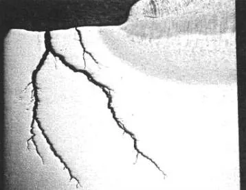
Figure 3-3-1 — A photomicrograph of a cross section of a weld in non-PWHT’d carbon steel piping
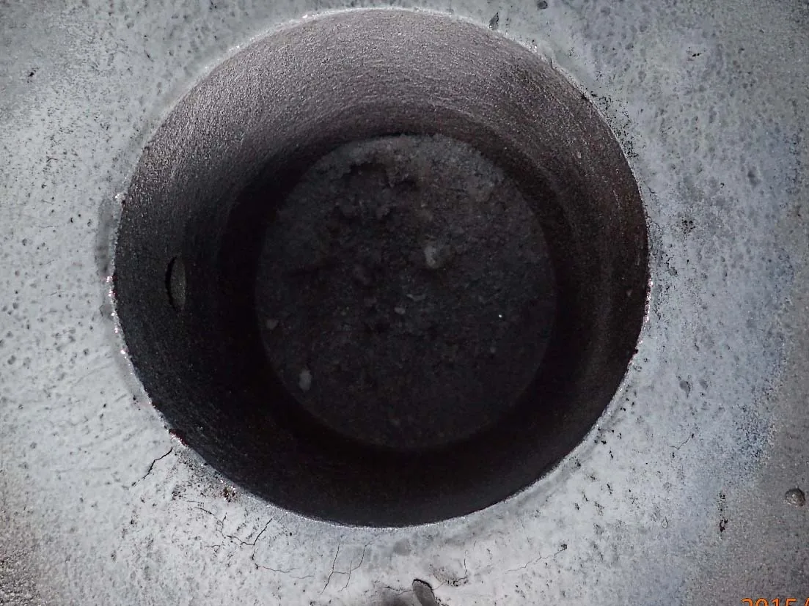
Figure 3-3-2 — Radial amine SCC cracks emanating from the bore
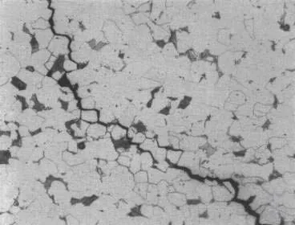
Figure 3-3-3 — A higher-magnification view of the crack tip in Figure 3-3-1.
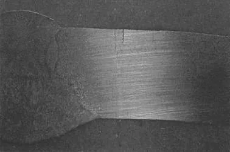
Figure 3-3-4 — A photomicrograph of a cross section of a carbon steel piping weld
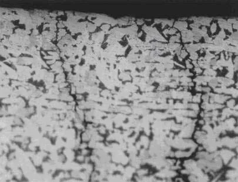
Figure 3-3-5 — A higher-magnification view of the cracks in Figure 3-3-4, which illustrates the
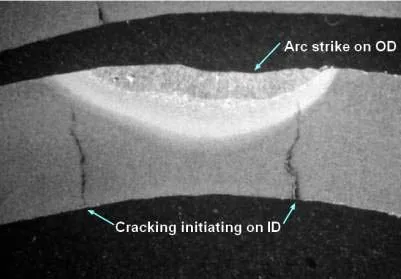
Figure 3-3-6 — Amine SCC developed on the inside diameter (ID) beneath an arc strike on the
3.4
Ammonia Stress Corrosion Cracking
Environmental CrackingDescription of Damage: Cracking that occurs in susceptible alloys under tensile stress when exposed to aqueous ammonia or anhydrous ammonia environments.
| Damage Type | Ammonia Stress Corrosion Cracking (SCC) |
| Affected Materials |
|
| Main Cause | Combination of residual stress and exposure to ammonia or ammoniacal compounds, often requiring traces of oxygen. |
| Critical Factors |
|
| Locations |
|
| Appearance |
|
| Prevention |
|
| Inspection |
|
| Related | None. |
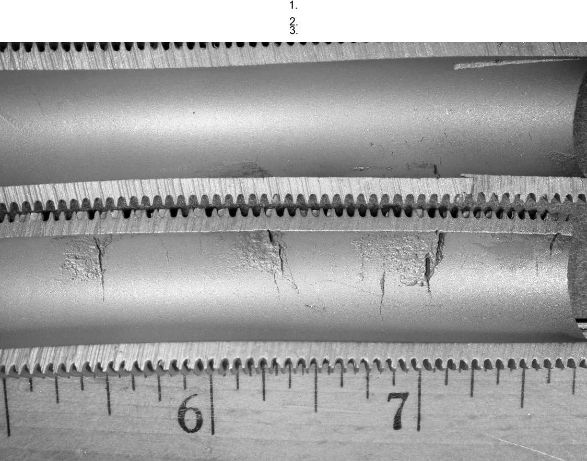
Figure 3-4-1 — Ammonia SCC in an inhibited admiralty tube UNS C44300, 0.75 in.
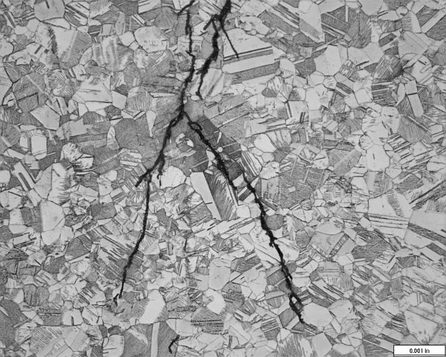
Figure 3-4-2 — High-magnification view of a cross section of the tube in Figure 3-4-1
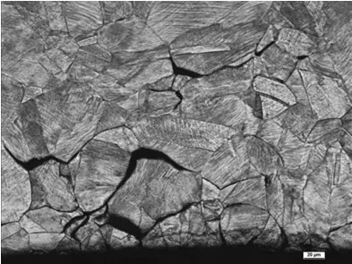
Figure 3-4-3 — High-magnification view of a cross section of a brass exchanger tube showing intergranular cracking.
3.5
Ammonium Bisulfide Corrosion
Uniform / Localized ThinningDescription of Damage: Aggressive corrosion occurring in units handling alkaline sour water, particularly in areas of high turbulence and high ammonium bisulfide concentration.
| Damage Type | Ammonium Bisulfide Corrosion (Alkaline Sour Water) |
| Affected Materials |
|
| Main Cause | Precipitation and hydration of ammonium bisulfide (NH4HS) salts in reactor effluent and sour water streams. |
| Critical Factors |
|
| Locations |
|
| Appearance |
|
| Prevention |
|
| Inspection |
|
| Related | Erosion-corrosion (3.27), ammonium chloride corrosion (3.6), concentration cell corrosion (3.19), titanium hydriding (3.66), chloride SCC (3.17). |
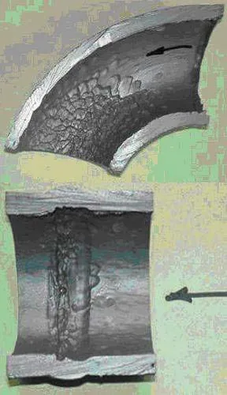
Figure 3-5-1 — Ammonium bisulfide corrosion in a 2-in. CS elbow and straight section
3.6
Ammonium Chloride and Amine Hydrochloride Corrosion
Uniform / Localized ThinningDescription of Damage: Highly localized corrosion, often pitting, occurring underneath deposited ammonium chloride or amine salts, even without a free water phase.
| Damage Type | Ammonium Chloride and Amine Hydrochloride Corrosion |
| Affected Materials | All commonly used materials. Carbon and low-alloy steels are least resistant; titanium and nickel alloys (625, C276) are most resistant. |
| Main Cause | Precipitation of hygroscopic ammonium chloride or amine salts that absorb tiny amounts of water, creating a highly concentrated, acidic, and corrosive environment. |
| Critical Factors |
|
| Locations |
|
| Appearance |
|
| Prevention |
|
| Inspection |
|
| Related | Hydrochloric acid corrosion (3.37), Chloride SCC (3.17), Aqueous organic acid corrosion (3.7), Concentration cell corrosion (3.19). |
3.7
Aqueous Organic Acid Corrosion
Uniform / Localized ThinningDescription of Damage: Corrosion caused by low molecular weight organic acids (like formic or acetic acid) that form from thermal decomposition of crude oil compounds or additives, condensing in water phases.
| Damage Type | Aqueous Organic Acid Corrosion |
| Affected Materials |
|
| Main Cause | Dissolution of volatile, light organic acids into the water phase, leading to reduced pH and acidic corrosion. |
| Critical Factors |
|
| Locations |
|
| Appearance |
|
| Prevention |
|
| Inspection |
|
| Related | HCl corrosion (3.37), Naphthenic acid corrosion (3.46). |
3.8
Atmospheric Corrosion
Uniform / Localized ThinningDescription of Damage: Corrosion of exposed metals caused by atmospheric moisture, worsened by marine environments, industrial pollution, and airborne contaminants.
| Damage Type | Atmospheric Corrosion |
| Affected Materials | Carbon steel, low-alloy steels, and copper-alloyed aluminum. |
| Main Cause | Moisture from humidity, rainfall, or cooling tower mist contacting unprotected metal surfaces. |
| Critical Factors |
|
| Locations |
|
| Appearance |
|
| Prevention |
|
| Inspection |
|
| Related | Corrosion under insulation (3.22), Concentration cell corrosion (3.19). |
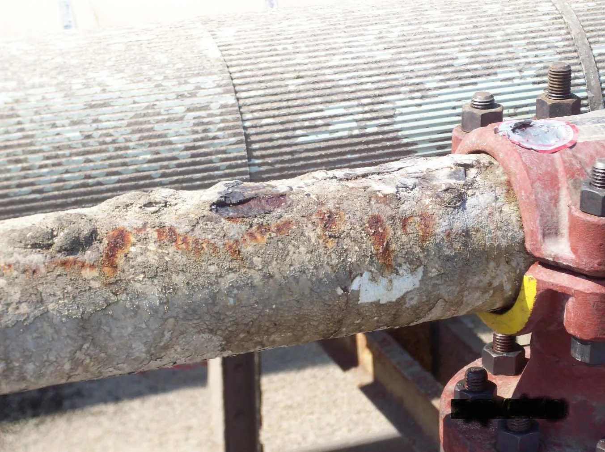
Figure 3-8-1 — Atmospheric corrosion of an LPG line in close proximity to a cooling tower.
3.9
Boiler Water and Steam Condensate Corrosion
Uniform / Localized ThinningDescription of Damage: General corrosion, pitting, or flow-accelerated corrosion (FAC) in boiler and condensate systems, primarily driven by dissolved oxygen, carbon dioxide, or flow disturbances.
| Damage Type | Boiler Water and Steam Condensate Corrosion |
| Affected Materials | Carbon steel and low-alloy steels. |
| Main Cause | Dissolved oxygen causing oxygen pitting, dissolved carbon dioxide causing carbonic acid corrosion, or high velocity/turbulence preventing protective magnetite scale formation (FAC). |
| Critical Factors |
|
| Locations |
|
| Appearance |
|
| Prevention |
|
| Inspection |
|
| Related | CO2 corrosion (3.18), Corrosion fatigue (3.21), Erosion-corrosion (3.27), Oxygenated water corrosion (3.49), Ammonia SCC of copper alloys (3.4). |
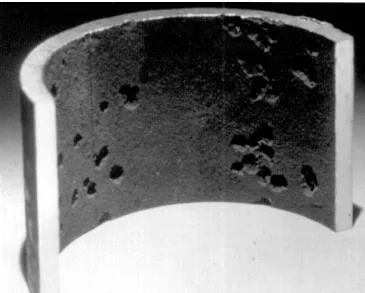
Figure 3-9-1 — Pits caused by oxygen corrosion.
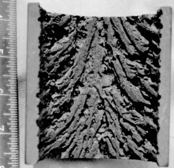
Figure 3-9-2 — Jagged fir-tree pattern of corrosion inside a tilted steel pipe caused by condensing
3.10
Brine Corrosion
Uniform / Localized ThinningDescription of Damage: Widespread or localized pitting corrosion on equipment exposed to aqueous solutions of dissolved salts (typically chlorides).
| Damage Type | Brine Corrosion |
| Affected Materials |
|
| Main Cause | Breakdown of protective passive layers by chlorides, leading to an autocatalytic acidic pitting process. |
| Critical Factors |
|
| Locations |
|
| Appearance |
|
| Prevention |
|
| Inspection |
|
| Related | MIC (3.45), Erosion-corrosion (3.27), Chloride SCC (3.17), Cooling water corrosion (3.20), Galvanic corrosion (3.31), Concentration cell corrosion (3.19), Oxygenated water corrosion (3.49). |
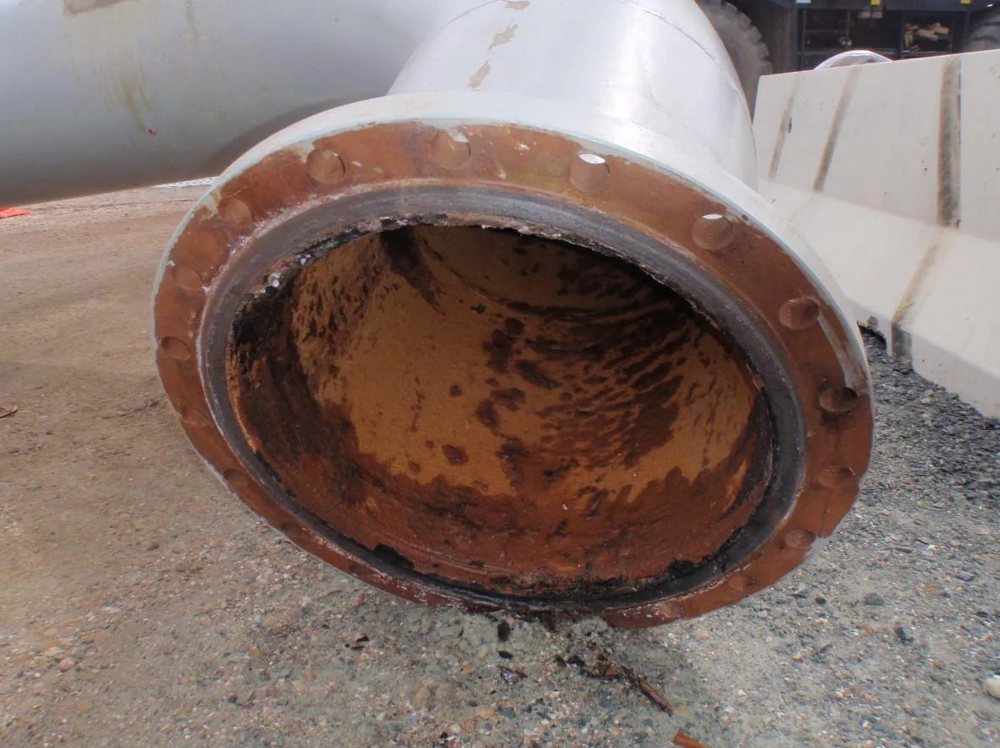
Figure 3-10-1 — Brine corrosion at a flange connection.
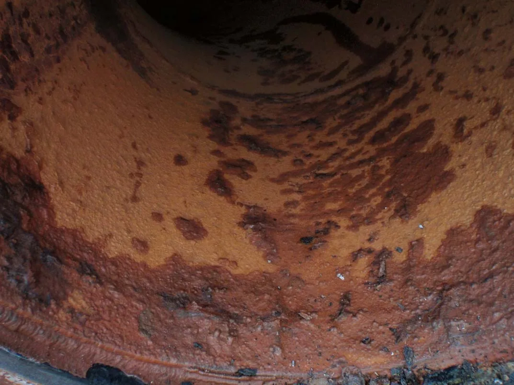
Figure 3-10-2 — Close-up of brine corrosion on flange in Figure 3-10-1.
3.11
Brittle Fracture
Mechanical DegradationDescription of Damage: Sudden rapid fracture under stress (residual or applied) with little to no evidence of ductility or plastic deformation.
| Damage Type | Brittle Fracture |
| Affected Materials | Carbon steels and low-alloy steels (especially older ones), and 400 series SS. Materials susceptible to other embrittling mechanisms (sigma phase, temper, strain-aging, titanium hydriding). |
| Main Cause | The combination of a susceptible material, a flaw or stress concentrator, and high enough residual or applied stress, usually at low temperatures. |
| Critical Factors |
|
| Locations | Equipment processing light hydrocarbons (autorefrigeration events) such as methane, ethane, propane, butane. Alkylation units, olefin units, polymer plants. Thick wall equipment during start-up, shutdown, or low-temperature hydrotesting. |
| Appearance | Cracks are typically straight, non-branching, and largely devoid of plastic deformation. Chevron markings on the fracture surface point back to the crack origin. Microscopic cleavage with little microvoid coalescence. |
| Prevention |
|
| Inspection | Routine inspection is not normally used to detect brittle fracture itself, but susceptible vessels can be inspected for pre-existing flaws using Magnetic Particle Testing (MT), Penetrant Testing (PT), or Ultrasonic Testing (UT). |
| Related | Temper embrittlement (3.63), strain age embrittlement (3.60), 885 °F embrittlement (3.1), titanium hydriding (3.66), sigma embrittlement (3.56). |
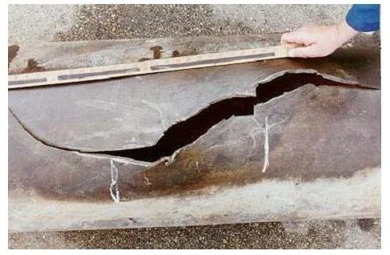
Figure 3-11-1 — 20-in. carbon steel pipeline that failed during hydrotest at gouges on the OD.
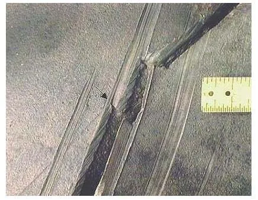
Figure 3-11-2 — Close-up of Figure 3-11-1 showing the gouges and
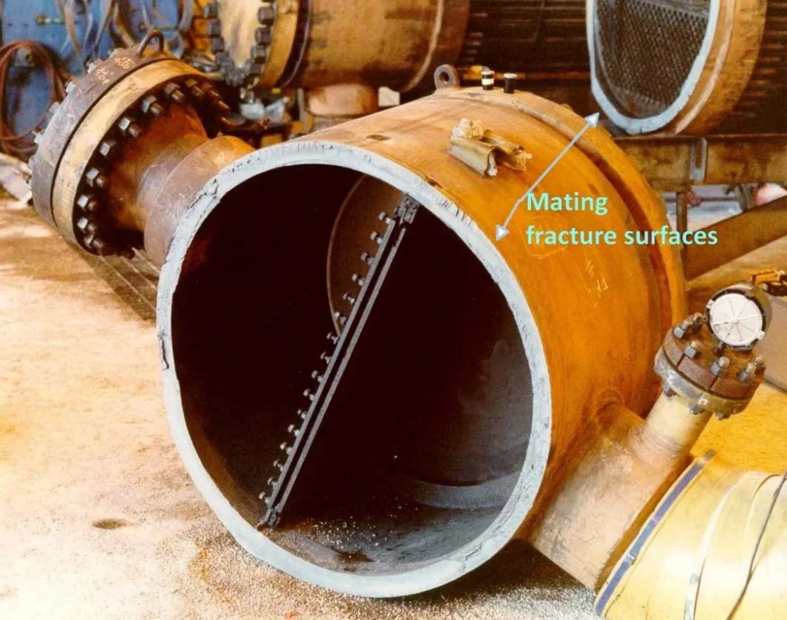
Figure 3-11-3 — Brittle fracture of a 2.2-in. wall C-0.5Mo exchanger channel during hydrotest.
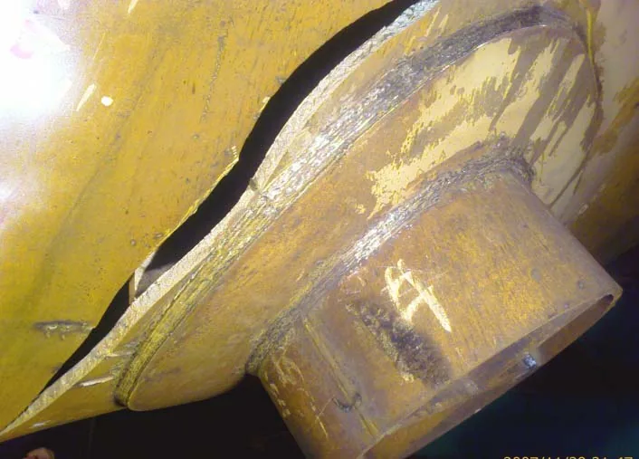
Figure 3-11-4 — Brittle fracture of vessel shell during hydrotest.
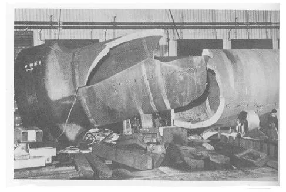
Figure 3-11-5 — Classic example of brittle fracture that occurred during hydrotest.
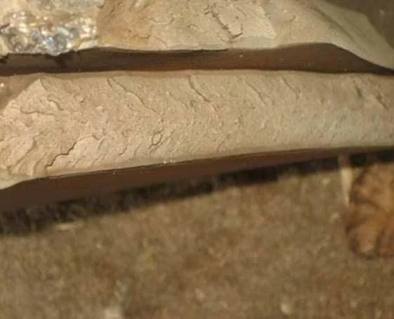
Figure 3-11-6 — Close-up view of the fracture surface from a vessel made of A516-70N plate showing
3.12
Carbonate Stress Corrosion Cracking
Environmental CrackingDescription of Damage: Surface-initiated cracking in process units containing a free water phase with carbonate ions, usually where some H2S is also present.
| Damage Type | Carbonate Stress Corrosion Cracking |
| Affected Materials | Carbon steel and low-alloy steels, particularly at welds or cold-worked areas. |
| Main Cause | Tensile residual stress in the presence of alkaline water containing carbonate ions. |
| Critical Factors |
|
| Locations | FCC unit main fractionator overhead condensing and reflux systems, downstream wet gas compression systems, and sour water systems. Regenerator shells, sour water stripper units, and mercaptan oxidation prewash vessels. |
| Appearance | Spider web of small surface-breaking cracks, often parallel to welds in the Heat Affected Zone (HAZ) or adjacent base metal. Cracks are predominantly intergranular, appearing as fine, oxide-filled networks. |
| Prevention |
|
| Inspection |
|
| Related | Amine cracking (3.3) and caustic SCC (3.15). |
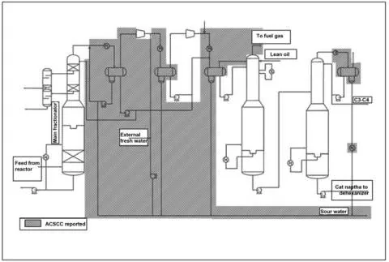
Figure 3-12-1 — Simplified PFD of an FCC unit gas plant showing
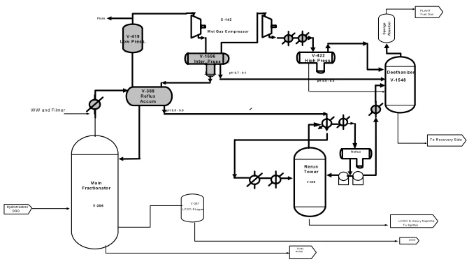
Figure 3-12-2 — In a span of 7 months, a refinery experienced 23 leaks in piping
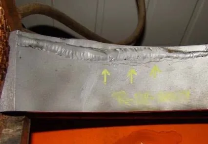
Figure 3-12-3 — Carbonate cracking in an overhead interstage knockout drum vapor outlet nozzle.
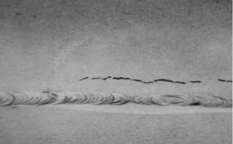
Figure 3-12-4 — Carbonate cracking adjacent to a weld. (Reference 6)
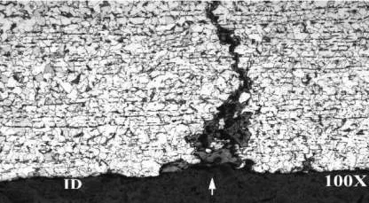
Figure 3-12-5 — Metallographic sample showing intergranular carbonate cracking
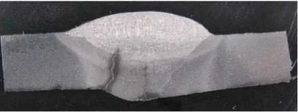
Figure 3-12-6 — Most cracks originate in base metal, but this weldment contained
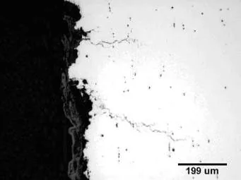
Figure 3-12-7 — Photomicrograph of carbonate cracking in the base metal.
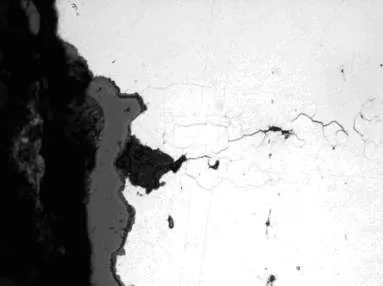
Figure 3-12-8 — Photomicrograph of carbonate cracking in the base metal,
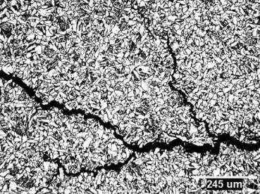
Figure 3-12-9 — Photomicrograph of carbonate cracking in the base metal,
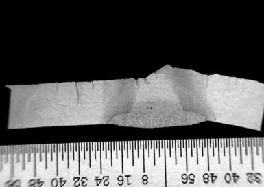
Figure 3-12-10 — A weld from a 4-in. (100 mm) ASTM A53 reflux line on
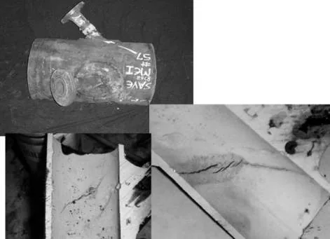
Figure 3-12-11 — An 18-in. (460-mm) diameter API 5L Grade B pipe section with two 1-in. (25-mm)
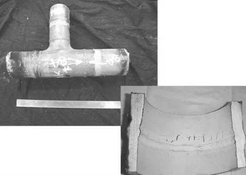
Figure 3-12-12 — A 3-in. x 4-in. (75-mm x 100-mm) diameter tee in a hydrocarbon line off a water knockout pot in the FCC light ends recovery section. Cracking developed after 6 months of service.
3.13
Carburization
Description of Damage: The absorption of carbon into a material at elevated temperatures in a carbonaceous environment, making the steel hard, brittle, and prone to cracking or spalling.
| Damage Type | Carburization |
| Affected Materials | Carbon steel, low-alloy steels, 300 and 400 series SS, cast stainless steels, nickel-based alloys with high iron content, and HK/HP alloys. |
| Main Cause | Exposure to a high carbon activity gas phase (hydrocarbons, coke, CO, methane) and low oxygen potential at temperatures typically above 1100 °F (595 °C). |
| Critical Factors |
|
| Locations | Fired heater tubes, ethylene pyrolysis and steam reformer furnaces, catalytic reformers, and coker units where coke can form. |
| Appearance | Hard, brittle structure at the surface. In advanced stages, volumetric increase causing "catastrophic carburization" (crumbling). Severe cases result in bulges, heavy scale, and thin-line brittle cracking ("crow's feet"). Increase in ferromagnetism in some alloys. |
| Prevention |
|
| Inspection |
|
| Related | Metal dusting (3.44). |
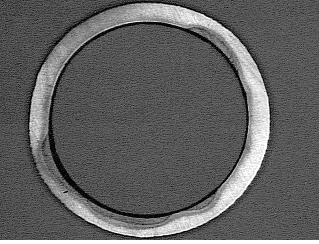
Figure 3-13-1 — Carburization (dark areas) of an HP-modified tube from an
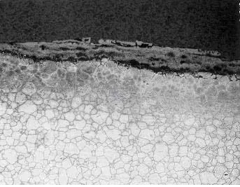
Figure 3-13-2 — A photomicrograph of a cross section of a 304H cyclone from a fluid coker
3.14
Caustic Corrosion
Uniform / Localized ThinningDescription of Damage: Localized corrosion due to the concentration of caustic solutions (NaOH, KOH) or corrosive salts, usually occurring under evaporative or high heat transfer conditions.
| Damage Type | Caustic Corrosion (Caustic Gouging) |
| Affected Materials | Primarily carbon steel, low-alloy steels, and 400 series SS. 300 series SS is generally resistant up to 160 °F–210 °F. |
| Main Cause | Concentration of caustic (alkaline) solutions on hot metal surfaces. |
| Critical Factors |
|
| Locations | Boilers and steam-generating equipment, preheat exchangers, furnace tubes, transfer lines where caustic is added to crude feed, and heat-traced caustic storage tanks/piping. |
| Appearance | Localized metal loss appearing as grooves (circumferential or longitudinal) or locally thinned areas under insulating deposits. Deposits may mask the damage below. |
| Prevention |
|
| Inspection |
|
| Related | Caustic SCC (3.15). |
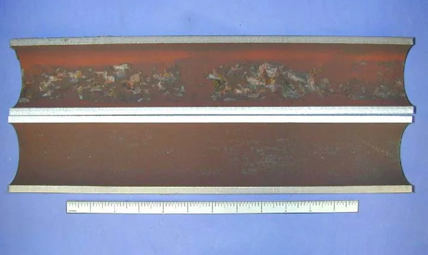
Figure 3-14-1 — ID deposits on carbon steel boiler tube with damage due to caustic corrosion.
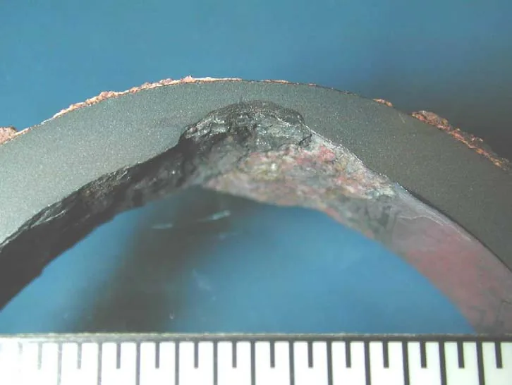
Figure 3-14-2 — Cross section of tube in Figure 3-14-1 showing
3.15
Caustic Stress Corrosion Cracking
Environmental CrackingDescription of Damage: Surface-initiated cracks in piping and equipment exposed to hot caustic solutions (alkaline hydroxide), primarily adjacent to non-stress-relieved welds.
| Damage Type | Caustic Stress Corrosion Cracking (Caustic SCC) |
| Affected Materials | Carbon steel, low-alloy steels, and 300 series SS. Duplex stainless steels are more resistant, and nickel-based alloys are highly resistant. |
| Main Cause | The combined effect of elevated temperatures, caustic concentration, and high tensile stress (usually residual stress from welding or forming). |
| Critical Factors |
|
| Locations | Caustic handling piping/equipment, H2S and mercaptan removal units, crude tower preheat systems (if caustic is injected), improperly heat-traced equipment, and boiler tubes/rolled joints where caustic concentrates. |
| Appearance | Spider web of small, surface-breaking cracks, usually parallel to welds in adjacent base metal. Branches are predominantly intergranular in carbon steel (appearing as fine, oxide-filled cracks) and mostly transgranular in 300 series SS (with a black magnetite layer). |
| Prevention |
|
| Inspection |
|
| Related | Amine SCC (3.3) and carbonate SCC (3.12). |
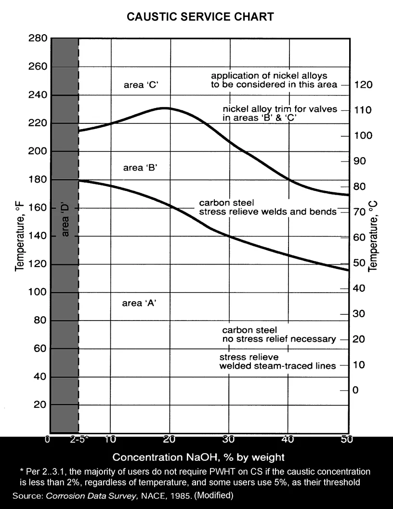
Figure 3-15-1 — Recommended operating limits for carbon steel in caustic service. (Reference 4)
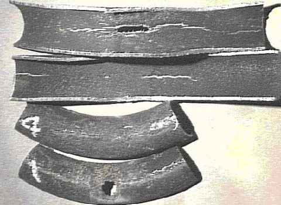
Figure 3-15-2 — Cracking initiating on the inside surface of a non-stress-relieved carbon steel heat
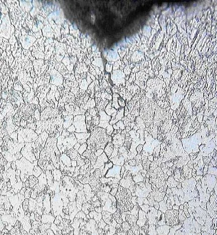
Figure 3-15-3 — Photomicrograph of a crack in the tube shown in Figure 3-15-2.
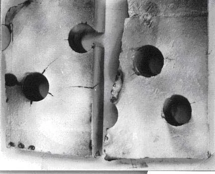
Figure 3-15-4 — Cracking in a boiler tubesheet due to caustic
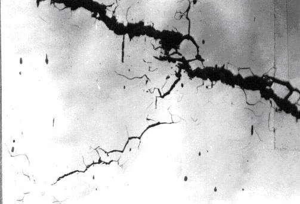
Figure 3-15-5 — Photomicrograph of a crack in the tubesheet shown in Figure 3-15-4.
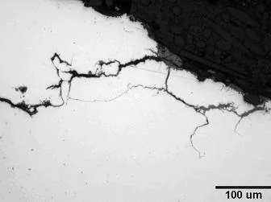
Figure 3-15-6 — Photomicrograph of caustic cracking initiating on the ID of a carbon steel socket weld
Figure 3-15-7 — Figure 3-15-6 in the etched condition.
Figure 3-15-8 — Stainless steel expansion bellows from a steam-driven
Figure 3-15-9 — Micrograph showing intergranular caustic SCC in an expansion joint
Figure 3-15-10 — Micrograph showing transgranular caustic
3.16
Cavitation
Mechanical DegradationDescription of Damage: A form of wear caused by the formation and instantaneous collapse of tiny vapor bubbles in a liquid, exerting severe localized impact forces that cause metal loss.
| Damage Type | Cavitation |
| Affected Materials | Most common materials (copper, brass, cast iron, carbon steel, low-alloy steels, stainless steels, nickel alloys). |
| Main Cause | Absolute pressure of the liquid falling below its vapor pressure, leading to the formation and rapid collapse of vapor bubbles. |
| Critical Factors |
|
| Locations | Pump casings, pump impellers (low-pressure side), downstream of orifices/control valves, and restricted-flow passages (e.g., venturis, heat exchanger tubes). |
| Appearance | Sharp-edged pitting or a gouged appearance in rotational components. Localized to the cavitation zone. Accompanied by noise (sounding like rattling pebbles) and high vibrations. |
| Prevention |
|
| Inspection |
|
| Related | Erosion and erosion-corrosion (3.27). |
Figure 3-16-1 — Mechanism of cavitation damage. As vapor bubbles collapse, microjets
Figure 3-16-2 — Cutaway of a CS butterfly valve with cavitation damage after 2 years
Figure 3-16-3 — Closer view of the damaged surface of the butterfly valve in Figure 3-16-2.
Figure 3-16-4 — Cavitation pitting on the low-pressure side of a stainless steel pump impeller.
Figure 3-16-5 — Pitting caused by cavitation on the water side of a
3.17
Chloride Stress Corrosion Cracking
Environmental CrackingDescription of Damage: Surface-initiated cracking caused by the combined action of tensile stress, temperature, and an aqueous chloride environment.
| Damage Type | Chloride Stress Corrosion Cracking (Cl- SCC) |
| Affected Materials | 300 series SS (highly susceptible) and some nickel-based alloys. Duplex stainless steels are more resistant. Carbon and low-alloy steels are NOT susceptible. |
| Main Cause | Presence of inorganic chloride ions in water, combined with tensile stress and elevated temperatures. |
| Critical Factors |
|
| Locations | Non-stress-relieved 300 series SS piping/equipment, water-cooled condensers, hydroprocessing drains, external surfaces under wet insulation (CUI), instrument tubing, and units processing bio-based feeds. |
| Appearance | Branching, spider-web or craze cracking on the surface. Usually shows no visible signs of general corrosion. Microscopically transgranular and branching. Fracture surfaces appear brittle. |
| Prevention |
|
| Inspection |
|
| Related | Caustic SCC (3.15), Polythionic Acid SCC (3.52), and brine corrosion (3.10). |
Figure 3-17-1 — External cracking of Type 304 SS instrument tubing under insulation.
Figure 3-17-2 — External cracking of Type 304 SS instrument tubing under insulation.
Figure 3-17-3 — Cracking on the shell side of a Type 316L SS tube in steam service at 450 °F (230 °C)
Figure 3-17-4 — Photomicrograph of a cross section of the tube in Figure 3-17-3
Figure 3-17-5 — Another photomicrograph of a cracked tube illustrating the
Figure 3-17-6 — Cl− SCC on the thread surface of a failed 303 SS bolt.
Figure 3-17-7 — Severe cracking of a finned Alloy C-276 tube in a deethanizer reboiler after 8 years
3.18
CO2 Corrosion
Uniform / Localized ThinningDescription of Damage: General and/or pitting corrosion of carbon steel caused by carbonic acid (H2CO3) forming when CO2 dissolves in liquid water.
| Damage Type | CO2 Corrosion |
| Affected Materials | Carbon steel and low-alloy steels. Requires a minimum of 12% Chromium (e.g., 410 SS) for major improvement. 300 series SS is highly resistant. |
| Main Cause | The formation of carbonic acid from dissolved CO2 in water, which lowers the pH and corrodes steel. |
| Critical Factors |
|
| Locations | Boiler Feed Water (BFW) and steam condensate systems, hydrogen plant effluent streams, CO2 removal plants, crude tower overhead systems, and locations with cooling effects (e.g., uninsulated pipe supports, blind flanges). |
| Appearance | Localized general thinning or pitting (often "mesa"-type flat-bottomed pitting). Deep pitting, grooving, or smooth "wash out" in areas of turbulence. Most severe at water/vapor interfaces where water condenses. |
| Prevention |
|
| Inspection |
|
| Related | Boiler water condensate corrosion (3.9) and carbonate cracking (3.12). |
Figure 3-18-1 — CO2 corrosion caused a leak in an elbow at a support leg. The cooling effect of the
Figure 3-18-2 — Corrosion found on the inside of the elbow in Figure 3-18-1.
Figure 3-18-3 — CO2 corrosion of a carbon steel oil and gas production flow line.
Figure 3-18-4 — Higher-magnification view of the corrosion pits in Figure 3-18-3.
Figure 3-18-5 — CO2 corrosion of a carbon steel pipe nipple in CO2-contaminated water.
Figure 3-18-6 — A view inside the nipple in Figure 3-18-3 showing “mesa”-type corrosion.
3.19
Concentration Cell Corrosion
Uniform / Localized ThinningDescription of Damage: Localized corrosion driven by an electrochemical cell created by differences in the environment (often oxygen concentration) between an occluded area (like under a deposit or in a crevice) and the surrounding bulk environment.
| Damage Type | Concentration Cell Corrosion |
| Affected Materials | Materials whose overall aqueous corrosion resistance correlates to susceptibility. Carbon steel is most susceptible. Low-alloy and stainless steels are also susceptible depending on the alloy and environment. |
| Main Cause | A differential in chemical species (typically oxygen) between an occluded cell and the surrounding fluid, creating a galvanic couple where the occluded (low-oxygen) area becomes the anode and corrodes faster. |
| Critical Factors |
|
| Locations | Anywhere deposits (sludge, scale, dirt) build up inside or outside equipment. Crevices at bolted joints, flange faces, baffle holes, peeling coatings, and where pipes rest on supports. |
| Appearance | Unevenly corroded surface, often described as pitting. In austenitic stainless steels with chlorides, it appears as sharp, narrow, deep pits. |
| Prevention |
|
| Inspection |
|
| Related | Atmospheric corrosion (3.8), Cooling water corrosion (3.20), Corrosion Under Insulation (3.22), Galvanic corrosion (3.31), Soil corrosion (3.57), and others. |
3.20
Cooling Water Corrosion
Uniform / Localized ThinningDescription of Damage: General or localized corrosion caused by dissolved salts, gases, organic compounds, or microbiological activity in cooling water systems.
| Damage Type | Cooling Water Corrosion |
| Affected Materials | Carbon steel, stainless steels, copper alloys, aluminum alloys, titanium, and nickel alloys. |
| Main Cause | Corrosive properties of cooling water (fresh, brackish, salt) combined with fouling, scaling, and microbiological growth. |
| Critical Factors |
|
| Locations | Cooling towers, piping, pumps, water-cooled heat exchangers, and any associated cooling water equipment. |
| Appearance | General corrosion, pitting, Microbiologically Influenced Corrosion (MIC), stress corrosion cracking, and fouling. Wavy/smooth corrosion from erosion/abrasion. Weld grooving in ERW pipe. |
| Prevention |
|
| Inspection |
|
| Related | Microbiologically induced corrosion (3.45), Cl- SCC (3.17), galvanic corrosion (3.31), concentration cell corrosion (3.19), and brine corrosion (3.10). |
Figure 3-20-1 — Cooling water corrosion on the ID of a carbon steel
3.21
Corrosion Fatigue
Mechanical DegradationDescription of Damage: A form of fatigue cracking in which cracks develop under the combined effects of cyclic loading and a corrosive environment.
| Damage Type | Corrosion Fatigue |
| Affected Materials | All metals and alloys. |
| Main Cause | Combined effects of cyclic stress (mechanical or thermal) and corrosion, which causes failure at lower stress levels and fewer cycles than purely mechanical fatigue. |
| Critical Factors |
|
| Locations | Rotating equipment (pump shafts), deaerator welds, cycling boiler buckstay attachments, and any equipment subjected to cyclic stress in a corrosive environment. |
| Appearance |
|
| Prevention |
|
| Inspection |
|
| Related | Mechanical fatigue, thermal fatigue, and boiler water and condensate corrosion. |
Figure 3-21-1 — Corrosion fatigue failure of a boiler tube.
Figure 3-21-2 — Metallographic mount of sample taken from failed boiler tube in Figure 3-20-1.
Figure 3-21-3 — Higher-magnification view of sample shown in Figure 3-20-2.
Figure 3-21-4 — Photograph of a carbon steel boiler tube cut in half lengthwise. Corrosion fatigue cracks initiated at the ID of the tube, opposite a buckstay attachment on the OD. (Magnification 1X.)
Figure 3-21-5 — Photomicrograph showing the crack morphology that is rounded with
3.22
Corrosion Under Insulation (CUI)
Uniform / Localized ThinningDescription of Damage: Corrosion of piping, pressure vessels, and structural components resulting from water trapped under insulation or fireproofing.
| Damage Type | Corrosion Under Insulation (CUI) |
| Affected Materials | Carbon steel, low-alloy steels, 300 series and 400 series stainless steels (SS), and duplex SS. |
| Main Cause | Prolonged wetting from moisture or water trapped underneath the insulation material. |
| Critical Factors |
|
| Locations |
|
| Appearance |
|
| Prevention |
|
| Inspection |
|
| Related | Atmospheric corrosion, oxidation, oxygenated water corrosion, concentration cell corrosion, and Chloride SCC. |
Figure 3-22-1 — Piping tee in a 1000 psig ethylene line before insulation removal.
Figure 3-22-2 — Close-up of the tee in Figure 3-21-1 after insulation removal.
Figure 3-22-3 — CUI of a 30-in. carbon steel butadiene line showing highly localized corrosion that could only be found by stripping the entire line. Note the 0.25-in. (6.5-mm) diameter hole at arrow.
Figure 3-22-4 — CUI of a nozzle on the bottom head of a pressure vessel.
Figure 3-22-5 — CUI of a nozzle on the top head of a pressure vessel.
Figure 3-22-6 — CUI of a vessel wall. Note the leak at the arrow.
Figure 3-22-7 — CUI at attachment supports and on the vessel head.
Figure 3-22-8 — CUI of a carbon steel level bridle.
3.23
Creep and Stress Rupture
Description of Damage: A time-dependent, continuous deformation of stressed metal components at high temperatures, which occurs even below the material's elastic yield stress and eventually leads to cracking and rupture.
| Damage Type | Creep and Stress Rupture |
| Affected Materials | All metals and alloys, when exposed to temperatures above their specific high-temperature thresholds. |
| Main Cause | Prolonged exposure to stress at high temperatures (typically greater than half of the material's absolute melting temperature). |
| Critical Factors |
|
| Locations |
|
| Appearance |
|
| Prevention |
|
| Inspection |
|
| Related | Short-term overheating (stress rupture), Stress Relaxation Cracking (SRC), and Dissimilar Metal Weld (DMW) cracking. |
Figure 3-23-1 — A pinched Alloy 800H pigtail with opened-up creep fissures on the surface.
Figure 3-23-2 — Creep rupture of an HK40 heater tube.
Figure 3-23-3 — Creep failure of Type 310 SS heater tube guide bolt after approximately 7 years of service at 1400 °F (760 °C). (a) Cross section at 10X magnification, as-polished. (b) Voids and
3.24
Dealloying
Uniform / Localized ThinningDescription of Damage: A selective corrosion mechanism where one or more specific elements are preferentially leached out of an alloy, leaving behind a weak, porous, and lower-density structure.
| Damage Type | Dealloying |
| Affected Materials | Primarily copper alloys (brasses, bronzes, copper-nickel alloys) and Alloy 400. |
| Main Cause | Exposure to specific corrosive environments that selectively attack a constituent element (e.g., zinc in brass, nickel in Alloy 400). |
| Critical Factors |
|
| Locations |
|
| Appearance |
|
| Prevention |
|
| Inspection |
|
| Related | Graphitic corrosion of cast irons. Also known by specific names like dezincification, denickelification, destannification, dealuminification, or selective leaching. |
Figure 3-24-1 — Cross section of a silicon-brass alloy, C87500, pump impeller from stagnant fire-water service. Layer-type dezincification depleted the zinc
Figure 3-24-2 — A zone of denickelification in an Alloy 400 valve plug (at the port),
3.25
Decarburization
Description of Damage: A condition where steel loses strength due to the removal of carbon and carbides, leaving behind a pure, weaker iron matrix.
| Damage Type | Decarburization |
| Affected Materials | Carbon steels and low-alloy steels. |
| Main Cause | Exposure to high temperatures, fires, or specific high-temperature gaseous environments that have a low carbon activity, causing carbon to diffuse out of the steel. |
| Critical Factors |
|
| Locations |
|
| Appearance |
|
| Prevention |
|
| Inspection |
|
| Related | High-Temperature Hydrogen Attack (HTHA). |
Figure 3-25-1 — Typical low-carbon-steel microstructure showing ferrite phase (light grains) and pearlite (dark layered constituent).
Figure 3-25-2 — Microstructure illustrating a decarburized low carbon steel where the strength-providing pearlite constituent has been decomposed as
3.26
Dissimilar Metal Weld (DMW) Cracking
Environmental CrackingDescription of Damage: Cracking that occurs at the weld joints between two different metals. It is driven by differing thermal expansion rates, hard mixed-metal zones, environmental cracking, or hydrogen disbonding.
| Damage Type | Dissimilar Metal Weld Cracking |
| Affected Materials | Commonly ferritic materials (carbon or low-alloy steels) welded to austenitic stainless steels (300 series) or nickel-based alloys. Also affects carbon steel welded to Alloy 400. |
| Main Cause | Mismatched coefficients of thermal expansion causing shear stress, galvanic corrosion cells, or the creation of brittle "mixed zones" during the welding process. |
| Critical Factors |
|
| Locations |
|
| Appearance |
|
| Prevention |
|
| Inspection |
|
| Related | Thermal fatigue, corrosion fatigue, creep and stress rupture, wet H2S damage, and hydrogen stress cracking in HF. |
Figure 3-26-1 — Two primary DMW configurations. (a) Ferritic steel pipe (left) welded to clad or weld overlaid pipe. (b) Solid stainless steel pipe (left) welded to clad or weld overlaid pipe.
Figure 3-26-2 — Schematic of typical weld detail used to join a solid stainless steel pipe to a clad or weld overlaid pipe. The sequence is as follows: (1) butter the weld bevel on the ferritic steel side,
Figure 3-26-3 — High-magnification photomicrograph of a DMW joining a ferritic alloy (SA213 T-22) used in high-temperature service. Creep cracks (black specks)
Figure 3-26-4 — Weld detail used to join a carbon steel elbow (bottom) to a weld
Figure 3-26-5 — High-magnification photomicrograph of SSC in pipe section shown in Figure 3-25-4.
Figure 3-26-6 — Failure of DMW joining 1.25Cr-0.5Mo to Alloy 800H in a hydro-dealkylation
Figure 3-26-7 — High-magnification photomicrograph of the crack in Figure 3-25-6
Figure 3-26-8 — Higher-magnification photomicrograph of the crack shown above in Figure 3-25-6.
Figure 3-26-9 — Failure of nickel alloy DMW joining HP40 (Nb-modified) tube to 1.25Cr-0.5Mo
Figure 3-26-10 — When both liquid phase coal ash corrosion and a DMW exists,
Figure 3-26-11 — A crack around the base of an Alloy 400 nozzle welded
Figure 3-26-12 — Photomicrograph showing crack propagation and corrosion in
3.27
Erosion/Erosion-Corrosion
Mechanical DegradationDescription of Damage: Erosion is the physical abrasion of material by flowing solids, liquids, or vapors. Erosion-corrosion occurs when this high velocity flow removes protective scales or films, drastically accelerating the underlying corrosion rate.
| Damage Type | Erosion/Erosion-Corrosion |
| Affected Materials | All metals and refractories. Primarily affects softer metals (like copper and aluminum alloys) and materials that rely on a protective corrosion layer/film for resistance. |
| Main Cause | High-velocity flow of fluids, catalyst particles, slurries, or liquid droplets, often acting in tandem with a corrosive environment. |
| Critical Factors |
|
| Locations |
|
| Appearance |
|
| Prevention |
|
| Inspection |
|
| Related | Cavitation. |
Figure 3-27-1 — Erosion-corrosion of a 1¼Cr-½Mo, 300-lb valve
Figure 3-27-2 — Erosion of a 9Cr-1Mo coker heater return bend
Figure 3-27-3 — Erosion-corrosion of an ASTM A48 Class 30
3.28
Ethanol Stress Corrosion Cracking
Environmental CrackingDescription of Damage: Surface-initiated environmental cracking of carbon steel caused by the combined action of tensile stress and exposure to fuel-grade ethanol (FGE) or FGE/gasoline blends.
| Damage Type | Ethanol Stress Corrosion Cracking |
| Affected Materials | All grades of carbon steel. |
| Main Cause | The combined effects of high tensile stress and an aerated (oxygen-containing) ethanol environment. |
| Critical Factors |
|
| Locations |
|
| Appearance |
|
| Prevention |
|
| Inspection |
|
| Related | Similar to SCC reported in methanol and alkaline aqueous solutions (Amine SCC, Carbonate SCC, Caustic SCC). |
Figure 3-28-1 — Ethanol SCC in a steel tank bottom. Note crack running parallel to fillet weld in striker plate.
Figure 3-28-2 — Ethanol SCC in a steel air eliminator vessel.
Figure 3-28-3 — A leak in piping resulting from an ethanol stress corrosion crack adjacent to the weld.
Figure 3-28-4 — Ethanol SCC in steel pipe from a loading rack supply line. The top figure shows a 7-in.- long crack parallel to the weld root on the pipe ID surface. The bottom picture is a cross section of the
Figure 3-28-5 — Ethanol SCC of steel piping in a fuel ethanol system return line/tank transfer line. The top picture shows the crack parallels the pipe-to-tee circumferential weld. The bottom picture
Figure 3-28-6 — The top picture shows cracking initiating in the base metal on the ID of a section of piping adjacent to the weld. The bottom picture is a high-magnification
Figure 3-28-7 — Transverse cross section of a piping section exposed to fuel ethanol showing
Figure 3-28-8 — Photomicrograph of ethanol SCC in a steel tank bottom showing
3.29
Flue Gas Dew Point Corrosion
Uniform / Localized ThinningDescription of Damage: Severe corrosion that occurs when combustion gases (sulfur, nitrogen, chlorides) and water vapor condense into highly corrosive acids (sulfuric, sulfurous, hydrochloric, nitric) on cool metal surfaces.
| Damage Type | Flue Gas Dew Point Corrosion |
| Affected Materials | Carbon steel, low-alloy steels, and 300 series stainless steels. |
| Main Cause | Operating metal surface temperatures that drop at or below the dew point of the acid gases present in the flue gas. |
| Critical Factors |
|
| Locations |
|
| Appearance |
|
| Prevention |
|
| Inspection |
|
| Related | Hydrochloric acid corrosion, sulfuric acid corrosion, and Chloride SCC. |
3.30
Fuel Ash Corrosion
Uniform / Localized ThinningDescription of Damage: Accelerated high-temperature wastage that occurs when fuel contaminants (sulfur, sodium, potassium, vanadium) form deposits that melt into highly corrosive liquid slags on metal surfaces.
| Damage Type | Fuel Ash Corrosion |
| Affected Materials | All conventional alloys used for process heaters and boiler construction. Alloys of the 50Cr-50Ni family show improved resistance. |
| Main Cause | Firing fuels (like heavy oil or coal) that contain sodium and vanadium (or potassium), which form molten salts that dissolve the metal's protective oxide scale. |
| Critical Factors |
|
| Locations |
|
| Appearance |
|
| Prevention |
|
| Inspection |
|
| Related | Hot corrosion, hot ash corrosion, molten salt corrosion, oil ash corrosion, and coal ash corrosion. |
Figure 3-30-1 — Type 316Ti stainless steel roof tube in a heavy fuel oil-burning vacuum heater that
Figure 3-30-2 — A closer view of the pitting appearance of the attack
Figure 3-30-3 — In cross section, the surface grooving on waterwall tubes
Figure 3-30-4 — The “alligator hide” morphology of liquid coal-ash corrosion is evident on the metal
3.31
Galvanic Corrosion
Uniform / Localized ThinningDescription of Damage: Accelerated corrosion that occurs when two dissimilar metals are joined together in a conductive electrolyte (like moist soil or water).
| Damage Type | Galvanic Corrosion |
| Affected Materials | All metals except most noble metals. |
| Main Cause | Difference in electrochemical potential between two connected metals in an electrolyte, causing the more active metal (anode) to corrode faster. |
| Critical Factors |
|
| Locations | Any unit where different metals are coupled in conductive fluids. Common in heat exchangers (tubes vs. tubesheets/baffles), buried piping, and ship hulls. |
| Appearance | Damage happens where materials are joined. The more active metal suffers generalized thinning or localized crevice/grooving/pitting adjacent to the connection. |
| Prevention |
|
| Inspection | Visual testing (VT) and ultrasonic thickness (UT) gauging for detecting thickness loss. Angle beam UT may be needed for hidden damage under bolts/rivets. |
| Related | Concentration cell corrosion, soil corrosion, DMW cracking, titanium hydriding. |
Figure 3-31-1 — Preferential galvanic corrosion of the more active of the two materials.
Figure 3-31-2 — Galvanic corrosion of a carbon steel nipple in a
3.32
Gaseous Oxygen-enhanced Ignition and Combustion
Refining Specific DegradationDescription of Damage: Spontaneous ignition or vigorous combustion of metallic and non-metallic components in oxygen-rich environments (>25% oxygen).
| Damage Type | Ignition and Combustion |
| Affected Materials |
|
| Main Cause | Presence of ignition energy (friction, particle impact, heat of compression) combined with high oxygen concentration and pressure. |
| Critical Factors |
|
| Locations | Sulfur Recovery Units (SRUs), FCC units, gasification units, POX units, and oxygen piping systems (especially valves/regulators). |
| Appearance | Obvious fire damage, breached pressure envelopes, missing internals, or external heat damage (glowing pipe or heat tint). |
| Prevention |
|
| Inspection | Sudden catastrophic ignition cannot be inspected in advance. Look for external heat damage or malfunctioning components, and use blacklights to check for hydrocarbon contamination. |
| Related | None. |
Figure 3-32-1 — Thermal combustor on the front end of a reaction furnace on a SRU.
Figure 3-32-2 — Same as figure above after damage due to oxygen combustion resulting from oxygen
Figure 3-32-3 — Same as figure above when viewed from a different angle.
Figure 3-32-4 — Photograph of a burned 304 SS elbow. The fire started in an upstream stainless
Figure 3-32-5 — Photograph illustrating burn-through of a brass pressure gage. Brass is generally suitable for oxygen service. However, the gauge was not intended for oxygen service and was not
Figure 3-32-6 — Burn-through of a PTFE-lined stainless steel hose in high-pressure gaseous
3.33
Graphitic Corrosion of Cast Irons
Uniform / Localized ThinningDescription of Damage: A form of dealloying in cast irons where the iron matrix corrodes away, leaving behind a weak, porous structure of graphite and corrosion products.
| Damage Type | Dealloying (Selective Leaching) |
| Affected Materials | Primarily gray cast iron, but also nodular (ductile) and malleable cast irons. (White iron is unaffected because it lacks free graphite.) |
| Main Cause | Exposure to low-pH, stagnant aqueous environments, or waters/soils high in sulfates, where the iron matrix acts as an anode to the graphite. |
| Critical Factors |
|
| Locations | Boiler feedwater equipment, pumps (impellers), valves, underground cast iron pipes, and fire-water systems. |
| Appearance | The metal turns a charcoal gray color. The component may look perfectly intact but will be very soft and easily gouged with a knife or hand tool. |
| Prevention |
|
| Inspection | Visual testing alone is insufficient. Scraping/gouging the surface with a tool can reveal soft areas. Field hardness testing, acoustic techniques (loss of metallic ring), and core sampling can also identify damage. |
| Related | Dealloying. (Do not confuse with Graphitization!) |
Figure 3-33-1 — Graphitic corrosion of a cast iron pump impeller due to glycol acidification.
Figure 3-33-2 — Cutaway of the cast iron impeller shown in Figure 3-32-1. The dark phase around the
Figure 3-33-3 — View of the outside of an underground concrete-lined
Figure 3-33-4 — View of concrete lining inside the failed line shown in Figure 3-32-3.
Figure 3-33-5 — Cross section of a gray cast iron drainpipe showing charcoal colored thru-wall
Figure 3-33-6 — Cross section of a gray cast iron pipe with
Figure 3-33-7 — Higher-magnification view of unaffected area “A” shown in Figure 3-32-6.
Figure 3-33-8 — Higher-magnification view of the damaged area “B” in Figure 3-32-6.
3.34
Graphitization
Description of Damage: A microstructural change where unstable carbide phases in steel decompose into graphite nodules after long-term exposure to high temperatures, reducing strength and creep resistance.
| Damage Type | Microstructural Degradation |
| Affected Materials | Some grades of carbon steel and ½Mo steels. |
| Main Cause | Prolonged operation at elevated temperatures (800 °F to 1100 °F) causing metallurgical instability. |
| Critical Factors |
|
| Locations | Carbon steel piping and hot-wall equipment in FCC, catalytic reforming, and coker units. Economizer tubing and steam piping. |
| Appearance | Completely invisible to the naked eye. Can only be observed via metallographic examination. Advanced stages may show microvoids, microfissuring, or cracking. |
| Prevention | Use low-alloy steels containing Chromium (e.g., 1.25Cr-0.5Mo) for long-term operations above 800 °F. |
| Inspection | Requires removal of full-thickness samples for metallographic examination. Field replicas may not work if damage is mid-wall. |
| Related | Spheroidization (which dominates above 1025 °F). |
Figure 3-34-1 — A crack opened up along the low-temperature edge of the HAZ
Figure 3-34-2 — A polished and etched side view of the sample in Figure 3-33-1
Figure 3-34-3 — High-magnification photomicrograph of a metallographic sample showing
Figure 3-34-4 — High-magnification photomicrograph of metallographic
3.35
High-temperature H2/H2S Corrosion
Uniform / Localized ThinningDescription of Damage: Accelerated high-temperature sulfidation corrosion caused by the presence of hydrogen in H2S-containing hydrocarbon streams at temperatures above 450 °F.
| Damage Type | Sulfidation / Uniform Corrosion |
| Affected Materials | Carbon steel, low-alloy steels, 400 series SS, and 300 series SS. (Resistance increases with Chromium content, but >7-9% Cr is needed for practical improvement.) |
| Main Cause | Reaction of metal with H2S at high temperatures, which is exacerbated by hydrogen (which converts reactive sulfur species into more H2S). |
| Critical Factors |
|
| Locations | Piping and equipment in hydroprocessing units (hydrotreaters and hydrocrackers), especially downstream of hydrogen injection points. |
| Appearance | Uniform thickness loss from the process side, accompanied by a tightly adherent, shiny gray iron sulfide scale (which is 5x the volume of the lost metal). |
| Prevention |
|
| Inspection | Ultrasonic thickness (UT) or Radiographic testing (RT) for thinning. Internal visual inspection. Smart pigging for heater tubes. Monitor operating temperatures closely. |
| Related | High-temperature sulfidation (in the absence of hydrogen). |
Figure 3-35-1 — Corrosion rate of carbon steel in H2/H2S service in a naphtha
Figure 3-35-2 — Corrosion rate curves for Cr-containing alloys in H2/H2S service. (Reference 1)
3.36
High-temperature Hydrogen Attack (HTHA)
Description of Damage: Damage caused when hydrogen diffuses into steel at high temperatures and pressures, reacting with carbon/carbides to form methane (CH4) gas, which cannot escape and builds internal pressure.
| Damage Type | Internal Cracking / Metallurgical Degradation |
| Affected Materials | Carbon steel, C-0.5Mo, and lower Cr-Mo steels. (300 series SS and higher Cr alloys like 5Cr/9Cr are not susceptible.) |
| Main Cause | Atomic hydrogen reacting with carbon in the steel at high temperatures to form trapped methane gas. |
| Critical Factors |
|
| Locations | Hydroprocessing units, catalytic reformers, hydrogen manufacturing units, and high-pressure steam boiler tubes. Occurs in base metal and weld HAZs. |
| Appearance | Internal micro-fissuring and cracking (intergranular) that can link up to cause failure. Blistering may occur. May be accompanied by surface decarburization. Unpredictable locations. |
| Prevention |
|
| Inspection | Very difficult to detect in early stages. Requires highly specialized NDE (like TOFD and PAUT). Standard UT/RT are not reliable for HTHA. |
| Related | Decarburization, Hydrogen Embrittlement. |
Figure 3-36-1 — Recommended temperature and H2 partial pressure limits per API RP 941. (Reference 1)
Figure 3-36-2 — A pair of 10-in. C-½Mo flanged pipe sections (SA335-P1 and SA234-WP1) from a hot bypass line in a catalytic reformer that was designed to remain closed but operated
Figure 3-36-3 — A photomicrograph of the OD surface of a pipe section from Figure 3-35-2
Figure 3-36-4 — A photomicrograph at the ID surface of the pipe in Figure 3-35-2
Figure 3-36-5 — A photomicrograph illustrating internal decarburization and fissuring of C-½Mo steel.
Figure 3-36-6 — A high-magnification photomicrograph showing linkup
3.37
Hydrochloric Acid Corrosion
Uniform / Localized ThinningDescription of Damage: Very aggressive corrosion caused by aqueous hydrochloric acid (HCl), often occurring when water and hydrogen chloride gas condense together.
| Damage Type | General and Localized Corrosion |
| Affected Materials | All common materials used in refineries. Carbon steel, 300 series SS, and 400 series SS are all highly susceptible. (Alloy 400 and Titanium have better resistance.) |
| Main Cause | Condensation of HCl gas with water (acid dew point) or formation of aqueous HCl beneath chloride salt deposits. |
| Critical Factors |
|
| Locations | Crude/vacuum unit overhead systems (where first water drops condense). Hydroprocessing and catalytic reforming unit effluent trains (where chloride salts settle and absorb water). |
| Appearance | Carbon/low-alloy steels suffer uniform thinning, localized corrosion, or under-deposit attack. Stainless steels often suffer pitting and chloride stress corrosion cracking. Orange-yellow scale buildup. |
| Prevention |
|
| Inspection | Visual inspection for orange-yellow discoloration and scale. UT thickness mapping and Profile RT (especially at elbows, dead-legs, and mixing points). Regularly monitor water pH and chloride content. |
| Related | Ammonium chloride corrosion, Chloride SCC, Aqueous organic acid corrosion. |
3.38
Hydrofluoric Acid Corrosion
Uniform / Localized ThinningDescription of Damage: Highly aggressive general or localized corrosion caused by dilute hydrofluoric (HF) acid, often accompanied by hydrogen damage mechanisms.
| Damage Type | General and Localized Corrosion |
| Affected Materials | Carbon steel, Alloy 400, and some Nickel-based alloys. (Low-alloy steels and stainless steels are unsuitable.) |
| Main Cause | Exposure to HF acid containing water. (Anhydrous HF is not very corrosive to carbon steel because it forms a protective fluoride scale, but adding water destroys this protection.) |
| Critical Factors |
|
| Locations | HF Alkylation units (piping, fractionation sections, regenerators, dead-legs, ARH/ARN, and trace HF circuits). |
| Appearance | General corrosion, severe localized corrosion (especially at welds and phase-change locations), and galvanic corrosion between Alloy 400 and CS. Often accompanied by heavy iron fluoride fouling. |
| Prevention |
|
| Inspection | Automated UT (AUT) or extensive hand-scanning (due to highly localized thinning). Profile RT for small-bore piping and dead-legs. PAUT for flange face crevice corrosion. |
| Related | Hydrogen Stress Cracking in HF, Hydrogen Blistering / HIC / SOHIC, HF Acid SCC of Nickel Alloys. |
Figure 3-38-1 — Corrosion rate as a function of temperature for carbon steel in anhydrous HF acid
Figure 3-38-2 — The corrosion rate of carbon steel at 70 °F to 100 °F (20 °C to 40 °C) based on
Figure 3-38-3 — Cross section of a carbon steel pipe showing preferential
Figure 3-38-4 — Ruptured NPS 3 Sch. 80 [0.216 in. (5.5 mm) wall thickness] depropanizer
Figure 3-38-5 — A cross section of a line in fresh acid service showing accelerated corrosion of the
Figure 3-38-6 — Accelerated corrosion in the HAZ of a carbon steel
Figure 3-38-7 — HF corrosion at a manway in HF acid storage service.
Figure 3-38-8 — Internal blister caused by HF corrosion near the top of a 1.2-in.-thick carbon steel tower in an HF alkylation unit. The maximum measured dimensions of the blister were 2 ft high and
3.39
Hydrofluoric Acid Stress Corrosion Cracking of Nickel Alloys
Environmental CrackingDescription of Damage: Surface-initiated cracking of nickel alloys caused by tensile stress and vapor-containing HF acid, triggered by the presence of oxygen.
| Damage Type | Environmental Cracking (SCC) |
| Affected Materials | Alloy 400, cold-worked Alloy K-500, and sometimes Ni-Cr-Mo alloys (Alloy C-276, etc.). |
| Main Cause | Exposure to an oxidizing agent (usually oxygen from air ingress) which converts protective CuF into aggressive cupric fluoride (CuF2). |
| Critical Factors |
|
| Locations | HF Alkylation unit pressure boundaries, internals, instruments, valve stems, and pump components made of nickel alloys. |
| Appearance | Presence of green crystalline deposits (CuF2). Annealed material shows intergranular cracking; cold-worked material shows transgranular cracking. |
| Prevention |
|
| Inspection | Penetrant Testing (PT) to identify cracks on components showing green crystalline deposits. Continuously monitor oxygen levels in purge gases. |
| Related | Dealloying (denickelification of CuNi alloys), Liquid Metal Embrittlement (from Mercury). |
Figure 3-39-1 — HF SCC of an Alloy 400 vent line in an acid dump system. (Reference 7)
Figure 3-39-2 — HF SCC of Alloy 400 instrument tubing. (Reference 7)
3.40
Hydrogen Embrittlement
Mechanical DegradationDescription of Damage: The loss of strength, ductility, and fracture toughness in susceptible metals due to the penetration and diffusion of atomic hydrogen, leading to brittle cracking.
| Damage Type | Loss of Toughness / Brittle Cracking |
| Affected Materials | Low-alloy steels, high-strength steels, 400 series SS, and some Nickel alloys. Carbon steel is susceptible if hardened by cold work/welding (usually hardness > HRC 22). |
| Main Cause | Atomic hydrogen entering the metal from welding (wet electrodes), corrosion reactions (wet H2S, HF), high-temp hydrogen gas, or manufacturing (electroplating). |
| Critical Factors |
|
| Locations | Hydroprocessing/catalytic reforming reactors, high-strength storage spheres, high-strength bolts/springs, and equipment in wet H2S or HF service. |
| Appearance | Not visible until brittle cracking occurs. Cracks are often surface-breaking, branched, and occur at stress concentrations or hard HAZs. |
| Prevention |
|
| Inspection | PT, MT, or WFMT for surface cracking. Angle beam UT for sizing cracks. RT and VT are not reliable. |
| Related | Underbead cracking, Sulfide Stress Cracking (SSC), Hydrogen Stress Cracking in HF. |
Figure 3-40-1 — (a) Cracking due to HE of a high-strength steel tube.
Figure 3-40-2 — (a) HE of a martensitic stainless steel pump component. (b) High-magnification
3.41
Hydrogen Stress Cracking in Hydrofluoric Acid
Environmental CrackingDescription of Damage: Environmental cracking in high-strength low-alloy and carbon steels caused by exposure to aqueous HF acid, typically occurring in highly localized, high-hardness zones.
| Damage Type | Hydrogen Stress Cracking |
| Affected Materials | Carbon steel and low-alloy steels. |
| Main Cause | Embrittlement from hydrogen charged into the steel by the corrosion reaction in HF, exacerbated by high applied or residual tensile stress. |
| Critical Factors |
|
| Locations |
|
| Appearance |
|
| Prevention |
|
| Inspection |
|
| Related | Hydrogen Embrittlement, Sulfide Stress Cracking in wet H2S, Hydrofluoric Acid SCC of Nickel Alloys. |
3.42
Liquid Metal Embrittlement
Environmental CrackingDescription of Damage: Sudden and brittle cracking occurring when specific alloys come in contact with certain molten or liquid metals.
| Damage Type | Liquid Metal Embrittlement (LME) |
| Affected Materials | Many alloys including carbon steel, low-alloy steels, high-strength steels, 300 series SS, nickel alloys, copper alloys, aluminum alloys, and titanium alloys. |
| Main Cause | Contact between specific metal combinations and low-melting-point metals (e.g., zinc, mercury, cadmium, lead). |
| Critical Factors |
|
| Locations |
|
| Appearance |
|
| Prevention |
|
| Inspection |
|
| Related | Liquid Metal Cracking. |
Figure 3-42-1 — Sketch of a stainless steel elbow that suffered liquid metal embrittlement as the result of dripping molten zinc during a fire.
Figure 3-42-2 — Photomicrograph of a section of the elbow in Figure 3-40-1, illustrating
Figure 3-42-3 — LME of Monel caused by mercury in an FCC gas plant overhead drum.
3.43
Mechanical Fatigue (Including Vibration-induced Fatigue)
Mechanical DegradationDescription of Damage: A mechanical form of degradation resulting in sudden, unexpected cracking caused by extended exposure to cyclical stresses (e.g., dynamic loading, vibration, water hammer).
| Damage Type | Mechanical Fatigue |
| Affected Materials | All engineering alloys. |
| Main Cause | Cyclical stresses from mechanical loading, often amplified by stress risers or resonant frequencies. |
| Critical Factors |
|
| Locations |
|
| Appearance |
|
| Prevention |
|
| Inspection |
|
| Related | Thermal Fatigue, Corrosion Fatigue. |
Figure 3-43-1 — Vibration induced fatigue of a 1-in. socket weld flange
Figure 3-43-2 — Cross-sectional view of the crack in the socket weld in Figure 3-41-1.
Figure 3-43-3 — Fatigue crack in a 16-in. pipe-to-elbow weld in the fill line
Figure 3-43-4 — A cross section through the weld showing the crack location.
Figure 3-43-5 — Schematic of a fatigue fracture surface showing “beach marks.”
Figure 3-43-6 — Compressor rod fracture surface showing “beach marks.”
Figure 3-43-7 — Higher-magnification view of Figure 3-41-6 above showing “beach marks.”
Figure 3-43-8 — Fatigue fracture surface of a carbon steel pipe.
Figure 3-43-9 — The surface of the fracture face of the crack shown in Figure 3-41-3 and Figure 3-41-4.
3.44
Metal Dusting
Description of Damage: Accelerated localized pitting and rapid metal wastage in processes containing carbon and oxygen, resulting in pits filled with carbon soot and metal dust.
| Damage Type | Metal Dusting |
| Affected Materials | Low-alloy steels, 300 series SS, nickel-based alloys, and heat-resisting alloys. No known alloy is completely immune. |
| Main Cause | Reducing environments with high carbon activity (>1), leading to carburization and decomposition of metal carbides into dust. |
| Critical Factors |
|
| Locations |
|
| Appearance |
|
| Prevention |
|
| Inspection |
|
| Related | Carburization. |
Figure 3-44-1 — Metal dusting of a 304H stainless steel pipe.
Figure 3-44-2 — Carbon steel separator plate in a natural gas preheater
3.45
Microbiologically Influenced Corrosion
Uniform / Localized ThinningDescription of Damage: Localized corrosion (pitting or crevice) caused by living organisms like bacteria, algae, or fungi, often associated with tubercles or slime.
| Damage Type | Microbiologically Influenced Corrosion (MIC) |
| Affected Materials | Carbon and alloy steels, 300 and 400 series SS, aluminum alloys, copper alloys, and some nickel alloys. Titanium is highly resistant. |
| Main Cause | Colonies of microorganisms thriving in aqueous environments, producing corrosive by-products. |
| Critical Factors |
|
| Locations |
|
| Appearance |
|
| Prevention |
|
| Inspection |
|
| Related | Cooling Water Corrosion, Brine Corrosion, Oxygenated Water Corrosion, Concentration Cell Corrosion. |
Figure 3-45-1 — MIC on a diesel tank bottom.
Figure 3-45-2 — Pitting corrosion on the ID of a 6-in. carbon steel sour crude line after 2½ years of
Figure 3-45-3 — Same pipe as Figure 3-43-2. Note the halo effect.
Figure 3-45-4 — Oil line with MIC damage beneath tubercles.
Figure 3-45-5 — Same oil line as Figure 3-43-4. Hemispherical pitting typical
Figure 3-45-6 — Type 304 stainless steel exchanger tubes failed from pitting corrosion on
Figure 3-45-7 — A cross section of the tube in Figure 3-43-6 revealing
3.46
Naphthenic Acid Corrosion
Refining Specific DegradationDescription of Damage: High-temperature localized corrosion occurring in hot, dry hydrocarbon streams containing organic naphthenic acids.
| Damage Type | Naphthenic Acid Corrosion (NAC) |
| Affected Materials | Carbon steel, low-alloy steels, 400 series SS, 300 series SS, and nickel-based alloys. |
| Main Cause | Corrosive attack by naphthenic acids, which remove protective iron sulfide scales, particularly in high-velocity or two-phase flow areas. |
| Critical Factors |
|
| Locations |
|
| Appearance |
|
| Prevention |
|
| Inspection |
|
| Related | Sulfidation. |
Figure 3-46-1 — Erosion-corrosion damage due to NAC in a 10-in. 5Cr-½Mo elbow
Figure 3-46-2 — Severe NAC of 410 SS trays and bubble caps in the HVGO section of the vacuum
3.47
Nitriding
Description of Damage: The formation of a hard, brittle surface layer on alloys due to high-temperature exposure to nitrogen compounds (like ammonia), which can lead to cracking.
| Damage Type | Nitriding |
| Affected Materials | Carbon steel, low-alloy steels, 300 and 400 series SS. Nickel-based alloys are more resistant. |
| Main Cause | High-temperature diffusion of nitrogen into the metal matrix, forming brittle iron nitrides. |
| Critical Factors |
|
| Locations |
|
| Appearance |
|
| Prevention |
|
| Inspection |
|
| Related | Carburization, Metal Dusting. |
Figure 3-47-1 — A nitrided 5Cr-½Mo thermowell tube from
Figure 3-47-2 — A photomicrograph of a cross section though the tube in Figure 3-45-1 showing the
Figure 3-47-3 — A higher-magnification photomicrograph of the same tube showing the smaller diamond-shaped hardness indentation in the hard nitrided layer (540 HB) vs
3.48
Oxidation
Description of Damage: The high-temperature reaction of oxygen with metals, converting the metal to an oxide scale and reducing wall thickness.
| Damage Type | Oxidation |
| Affected Materials | All iron-based materials (carbon and low-alloy steels), 300 and 400 series SS, and nickel alloys. |
| Main Cause | Exposure to oxygen-containing environments at high temperatures. |
| Critical Factors |
|
| Locations |
|
| Appearance |
|
| Prevention |
|
| Inspection |
|
| Related | Sulfidation, High-temperature H2/H2S Corrosion, Carburization, Metal Dusting. |
Figure 3-48-1 — Estimated oxidation rates based on the data in Table 3-46-1a.
Figure 3-48-2 — Oxidation of a carbon steel nut on a stainless steel stud at 1300 °F (705 °C).
Figure 3-48-3 — Oxidation of a carbon steel grid from a sulfur reactor.
Figure 3-48-4 — Oxidation of the OD of a carbon steel furnace transfer line.
3.49
Oxygenated Process Water Corrosion
Uniform / Localized ThinningDescription of Damage: Significantly increased corrosion activity and pitting caused by the presence of dissolved oxygen in process water streams.
| Damage Type | Oxygenated Process Water Corrosion |
| Affected Materials | Carbon steel and low-alloy steels. |
| Main Cause | Oxygen dissolving into liquid water, interfering with protective iron oxide formation and accelerating corrosion. |
| Critical Factors |
|
| Locations |
|
| Appearance |
|
| Prevention |
|
| Inspection |
|
| Related | Cooling Water Corrosion, Boiler Water/Condensate Corrosion, Brine Corrosion, Concentration Cell Corrosion. |
3.50
Phenol (Carbolic Acid) Corrosion
Uniform / Localized ThinningDescription of Damage: Corrosion of carbon steel and some stainless steels by phenol used as a solvent in lube oil extraction.
| Damage Type | Phenol (Carbolic Acid) Corrosion |
| Affected Materials | Carbon steel, 304L SS. More resistant are 316L SS and Alloy C276. |
| Main Cause | Exposure to hot phenol solutions, exacerbated by water content and high flow velocities. |
| Critical Factors |
|
| Locations |
|
| Appearance |
|
| Prevention |
|
| Inspection |
|
| Related | Erosion-Corrosion. |
3.51
Phosphoric Acid Corrosion
Uniform / Localized ThinningDescription of Damage: Localized corrosion of carbon steel due to phosphoric acid used as a catalyst, especially when water is present.
| Damage Type | Phosphoric Acid Corrosion |
| Affected Materials | Carbon steel. 300 series stainless steels (304L, 316L), Alloy 20, and Alloy 825 are more resistant. "L" grades are preferred to avoid sensitization. |
| Main Cause | Mixing of solid phosphoric acid catalyst with water, creating a highly concentrated and corrosive acid. |
| Critical Factors |
|
| Locations |
|
| Appearance | Localized thinning with a pitted or smooth appearance on carbon steel. Intergranular corrosion on sensitized stainless steel. |
| Prevention |
|
| Inspection |
|
| Related | Under-deposit corrosion (3.19). |
3.52
Polythionic Acid Stress Corrosion Cracking
Environmental CrackingDescription of Damage: Rapid intergranular stress corrosion cracking of sensitized austenitic stainless steels and some nickel alloys. It happens when sulfide scale is exposed to air (oxygen) and moisture during shutdowns or start-ups, forming polythionic acids.
| Damage Type | Polythionic Acid Stress Corrosion Cracking (PTA SCC) |
| Affected Materials | Austenitic stainless steels (300 series) and austenitic alloys (Alloy 600, 800). Alloys 625 and 825 (require much higher temps to sensitize). |
| Main Cause | Formation of polythionic acids (H2SxO6) from the reaction of sulfide scale, air, and moisture. |
| Critical Factors |
|
| Locations |
|
| Appearance | Cracking is usually highly localized, propagating intergranularly near welds or high-stress areas. Often covered by deposits. Wall thickness loss is usually negligible. |
| Prevention |
|
| Inspection |
|
| Related | Intergranular corrosion and intergranular attack. |
Figure 3-52-1 — Dye penetrant (PT) inspection showing extensive OD PTA SCC around welds.
Figure 3-52-2 — High-magnification photomicrograph of metallographic sample
Figure 3-52-3 — PT inspection of a Type 304 stainless steel catalyst
Figure 3-52-4 — Cross section of the catalyst withdrawal line attached to the flange
Figure 3-52-5 — Higher-magnification view showing intergranular cracking. Magnification 200X.
3.53
Refractory Degradation
Refining Specific DegradationDescription of Damage: Mechanical damage (cracking, spalling, erosion) or chemical corrosion of thermal insulation or erosion-resistant refractories. Can lead to high skin temperatures on the underlying base metal.
| Damage Type | Refractory Degradation |
| Affected Materials | Insulating ceramic fibers, castables, refractory brick, plastic refractories, and their metallic anchors. |
| Main Cause | Extreme temperatures, thermal shock, erosion, vibration, moisture exposure, and chemical attack (oxidation, sulfidation, sulfurous acids). |
| Critical Factors |
|
| Locations |
|
| Appearance | Excessive cracking, spalling, lift-off from the substrate, softening, thinning, or general degradation. Exposed anchor systems. |
| Prevention |
|
| Inspection |
|
| Related | Oxidation (3.48), Sulfidation (3.61), Flue gas dew point corrosion (3.29), HTHA (3.36), Metal dusting (3.44). |
Figure 3-53-1 — Damaged refractory and ferrules.
3.54
Stress Relaxation Cracking (Reheat Cracking)
Environmental CrackingDescription of Damage: Intergranular cracking in the creep temperature range during post-weld heat treatment (PWHT) or high-temperature service. It happens when creep ductility cannot accommodate strains needed to relieve applied/residual stresses.
| Damage Type | Stress Relaxation Cracking (Reheat Cracking) |
| Affected Materials | Cr-Mo steels (especially 2¼Cr-1Mo-V), 1¼Cr-½Mo, 1¼Cr-½Mo. Types 304H, 316H, 321, 347 SS. Nickel-based alloys (800H, 617). HSLA steels. |
| Main Cause | Insufficient creep ductility to relieve high residual or applied stresses at elevated temperatures. |
| Critical Factors |
|
| Locations |
|
| Appearance | Intergranular cracking, either surface breaking or embedded. Found mainly in coarse-grained sections of the weld HAZ or weld deposits. Cracks show little deformation. |
| Prevention |
|
| Inspection |
|
| Related | Creep and stress rupture (3.23). |
Figure 3-54-1 — Samples removed from a cracked 12-in. NPS Type 321 SS elbow in a hot
Figure 3-54-2 — Crack at weld from Type 321 SS elbow shown in Figure 3-52-1.
Figure 3-54-3 — Cross section through the weldment showing the crack in Figure 3-52-2.
Figure 3-54-4 — Photomicrographs of the weldment area shown in Figure 3-52-3.
3.55
Short-term Overheating—Stress Rupture
Description of Damage: Permanent deformation (bulging) and rapid stress rupture failure occurring at very high temperatures, well above design limits, usually due to localized overheating.
| Damage Type | Short-term Overheating—Stress Rupture (Including Steam Blanketing) |
| Affected Materials | All fired heater tube and boiler tube materials. |
| Main Cause | Localized overheating due to flame impingement, excessive firing, or restricted coolant flow (e.g., steam blanketing/departure from nucleate boiling). |
| Critical Factors |
|
| Locations |
|
| Appearance | Localized deformation or bulging (3% to 10%+). Tube ruptures show open "fishmouth" failures with thin, knife-edged fracture surfaces. Microstructures show severely elongated grains due to plastic deformation. |
| Prevention |
|
| Inspection |
|
| Related | Creep/stress rupture (3.23), Caustic corrosion/gouging (3.14). |
Figure 3-55-1 — Short-term overheating failure of a vertical, 4.5-in. OD, schedule 160 2¼Cr-1Mo (SA335-P22) hydrocracker radiant tube that was 21 years
Figure 3-55-2 — Tube bulged and ruptured due to short-term
Figure 3-55-3 — 1Cr-½Mo boiler superheater tube in 700 psig
Figure 3-55-4 — The fracture-edge microstructure displays severely elongated ferrite grains,
Figure 3-55-5 — Short-term, high-temperature boiler tube failures from DNB are wide-open bursts
3.56
Sigma Phase Embrittlement
Description of Damage: A metallurgical change forming a hard, brittle intermetallic compound (sigma phase) in certain stainless steels when exposed to high temperatures. It causes a loss of ductility and fracture toughness at lower temperatures.
| Damage Type | Sigma Phase Embrittlement |
| Affected Materials | 300 series SS (especially cast alloys like HK/HP with high ferrite), 400 series SS, and duplex stainless steels. |
| Main Cause | Prolonged exposure to temperatures in the range of 1000 °F to 1700 °F (540 °C to 925 °C), leading to precipitation of the sigma phase. |
| Critical Factors |
|
| Locations |
|
| Appearance | Not visible to the naked eye. Damage appears as cracking at welds or high-stress areas during turnarounds or shutdowns when the metal is cool. Confirmed via metallography (dark-etching particles) and impact testing. |
| Prevention |
|
| Inspection |
|
| Related | 885 °F (475 °C) embrittlement (3.1). |
Figure 3-56-1 — CVN impact test results as absorbed energy in ft-lb,
Figure 3-56-2 — Tensile tests from 304H stainless steel FCC flue gas line with 12 % sigma phase. The top bar (a) failed in a brittle manner at room temperature. The bottom sample (b) was tested at the operating temperature and shows
Figure 3-56-3 — Microstructure of FCC regenerator plenum chamber wall, electrolytic etch in 33 % KOH, magnification 100X. Dark-etching particles
Figure 3-56-4 — Dark-etching particles are sigma phase that are concentrated near the outside surface of FCC regenerator plenum chamber, electrolytic etch in 33 % KOH, magnification 100X. (Reference 6)
Figure 3-56-5 — 304H stainless steel with 14 years operation at a nominal temperature of 1320 °F (716 °C) after (a) etching in Vilella’s reagent, magnification 100X, and (b) electrolytic etching in KOH, magnification 200X. The estimated amount of sigma phase was 5.0 %. (Reference 6)
3.57
Soil Corrosion
Uniform / Localized ThinningDescription of Damage: External corrosion of metals caused by exposure to soils and the moisture/electrolytes within them.
| Damage Type | Soil Corrosion |
| Affected Materials | Carbon steel, cast iron, and ductile iron. |
| Main Cause | Electrochemical reactions driven by moisture, dissolved electrolytes, acidity, and oxygen availability in the soil. |
| Critical Factors |
|
| Locations |
|
| Appearance | External thinning, roughened surfaces, and localized deep attack or pitting. Poor or damaged protective coatings are a strong warning sign. |
| Prevention |
|
| Inspection |
|
| Related | Galvanic corrosion (3.31), Concentration cell corrosion (3.19), Graphitic corrosion (3.33), MIC (3.45). |
Figure 3-57-1 — Corrosion of carbon steel pipe at the soil/air
Figure 3-57-2 — Coupons removed from the bottom of an unprotected steel condensate
Figure 3-57-3 — Cross section through location (A) showing severe corrosion.
3.58
Sour Water Corrosion (Acidic)
Refining Specific DegradationDescription of Damage: Corrosion of steel caused by acidic sour water containing hydrogen sulfide (H2S) with a pH between 4.5 and 7.0.
| Damage Type | Sour Water Corrosion (Acidic) |
| Affected Materials | Primarily carbon steel. Stainless steels, copper alloys, and nickel-based alloys are usually resistant. |
| Main Cause | Acidic aqueous environment driven by dissolved H2S (and potentially CO2 or organic acids). |
| Critical Factors |
|
| Locations |
|
| Appearance | Typically general thinning of carbon steel. Can result in localized or under-deposit pitting, especially if oxygen is present. 300 series SS may suffer pitting or chloride stress corrosion cracking if chlorides are present. |
| Prevention |
|
| Inspection |
|
| Related | Wet H2S damage (3.67), CO2 corrosion (3.18), Ammonium bisulfide corrosion (3.5), Concentration cell corrosion (3.19). |
3.59
Spheroidization (Softening)
Description of Damage: A time-dependent microstructural change in steels exposed to 850 °F–1400 °F (440 °C–760 °C) where carbide phases agglomerate into spheroidal forms, causing a loss in strength and creep resistance.
| Damage Type | Spheroidization (Softening) |
| Affected Materials | Carbon steel and low-alloy steels (e.g., C-½Mo, 1¼Cr-½Mo, up to 9Cr-1Mo). |
| Main Cause | Long-term exposure to elevated temperatures leading to microstructural instability. |
| Critical Factors |
|
| Locations |
|
| Appearance | Not visible to the naked eye. Observed via metallography as the transformation of plate-like pearlite (in carbon steel) or fine carbides (in Cr-Mo steels) into large, spheroidal, agglomerated carbides. |
| Prevention |
|
| Inspection |
|
| Related | Graphitization (3.34). |
Figure 3-59-1 — High-magnification photomicrograph of metallographic sample
Figure 3-59-2 — High-magnification photomicrograph of metallographic sample showing spheroidized carbides.
3.60
Strain Aging
Description of Damage: A form of metallurgical damage in older, non-fully deoxidized carbon steels that undergo plastic deformation followed by aging at intermediate temperatures. It causes increased hardness/strength but a severe loss of ductility and toughness, leading to brittle fracture risks.
| Damage Type | Strain Aging |
| Affected Materials | Older (pre-1980) carbon steels with large grain size and C-0.5Mo low-alloy steels (made via Bessemer or open hearth processes). |
| Main Cause | Interstitial nitrogen and carbon impurities pinning dislocations after cold working and exposure to intermediate temperatures. |
| Critical Factors |
|
| Locations |
|
| Appearance | Not visually apparent until a brittle fracture occurs. Can be identified by an increase in hardness in the deformed/aged zone or via detailed metallurgical analysis. |
| Prevention |
|
| Inspection |
|
| Related | Dynamic strain aging, blue brittleness. |
3.61
Sulfidation
Refining Specific DegradationDescription of Damage: Corrosion of carbon steel and other alloys resulting from their reaction with sulfur compounds in high-temperature environments (without hydrogen).
| Damage Type | Sulfidation (Sulfidic Corrosion) |
| Affected Materials |
|
| Main Cause | Reaction of metal with reactive sulfur compounds formed by the thermal decomposition of sulfur compounds at high temperatures. |
| Critical Factors |
|
| Locations | Piping and equipment processing high-temperature sulfur-containing streams. Units: Crude, vacuum, FCC, coker, visbreaker, and hydroprocessing feed sections. Coker heaters > 1193 °F (645 °C). |
| Appearance | Usually uniform thinning, but can vary in amount. Sometimes localized or high-velocity erosion-corrosion. Large difference in thinning between low and high-Si pipe. Sulfide scale usually covers the surface. |
| Prevention |
|
| Inspection |
|
| Related | High-temperature H2/H2S Corrosion (3.35). |
Figure 3-61-1 — Modified McConomy curves showing typical effect of temperature on
Figure 3-61-2 — Multiplier for corrosion rates in Figure 3-61-1
Figure 3-61-3 — Sulfidation failure of an 8-in. carbon steel pipe. Note the
Figure 3-61-4 — Sulfidation failure illustrating the effect of accelerated corrosion due to low silicon
Figure 3-61-5 — Thickness survey of 8-in. pipe shown in Figure 3-61-4 above.
Figure 3-61-6 — Sulfidation failure of a carbon steel sight glass nipple on the right after 2 years in a crude unit. Original thickness is shown on left for comparison. Material was supposed to be 9Cr-1Mo.
Figure 3-61-7 — Sulfidation failure of piping elbow.
3.62
Sulfuric Acid Corrosion
Uniform / Localized ThinningDescription of Damage: General and localized corrosion of carbon steel and other alloys promoted by sulfuric acid.
| Damage Type | Sulfuric Acid Corrosion |
| Affected Materials | (In order of increasing resistance) Carbon steel, 316L SS, Alloy 20, high-silicon cast iron, high-nickel cast iron, Alloy B-2, and Alloy C-276. |
| Main Cause | Contact with sulfuric acid, which is highly corrosive and can act as reducing or oxidizing depending on concentration/contaminants. |
| Critical Factors |
|
| Locations | Sulfuric acid alkylation units, waste water treatment plants. Specifics: contactors, reactor effluent lines, reboilers, deisobutanizer overheads. Storage tanks, rail cars, or dead-legs. |
| Appearance |
|
| Prevention |
|
| Inspection |
|
| Related | None. |
Figure 3-62-1 — Sulfuric acid corrosion rate chart for carbon steel.
Figure 3-62-2 — Accelerated sulfuric acid corrosion under a baffle.
Figure 3-62-3 — Grooving corrosion in the carbon steel vapor line from an
3.63
Temper Embrittlement
Description of Damage: A metallurgical change causing a reduction in fracture toughness (upward shift in ductile-to-brittle transition temperature) in some low-alloy steels from long-term exposure to 650-1070 °F (345-575 °C).
| Damage Type | Temper Embrittlement |
| Affected Materials | Primarily 2.25Cr-1Mo, somewhat 3Cr-1Mo, and HSLA Cr-Mo-V rotor steels. Older (pre-1972) 2.25Cr-1Mo are particularly susceptible. Welds more affected than newer low-impurity base materials. |
| Main Cause | Metallurgical changes from long-term exposure in the embrittling temperature range, driven by specific alloying and tramp elements. |
| Critical Factors |
|
| Locations | Hydroprocessing units (reactors, hot feed/effluent exchangers, hot HP separators). Catalytic reforming, FCC, coker, and visbreaking units. |
| Appearance | Not visually apparent! Requires destructive Charpy impact testing (CVN) to see the shift in transition temperature. Can result in catastrophic brittle fracture during start-up/shutdown. SEM shows intergranular cracking. |
| Prevention |
|
| Inspection | Not normally used to detect it. Monitor process conditions/pressurization. Install original heat test blocks inside reactor for periodic destructive impact testing. |
| Related | Brittle fracture (3.11). |
Figure 3-63-1 — Plot of CVN toughness as a function of temperature showing an upward shift in the
3.64
Thermal Fatigue
Mechanical DegradationDescription of Damage: Cracking resulting from cyclic stresses caused by variations in temperature and differential expansion being constrained.
| Damage Type | Thermal Fatigue |
| Affected Materials | All materials of construction. |
| Main Cause | Cyclic thermal stresses from repeated temperature swings where movement/expansion is restricted. |
| Critical Factors |
|
| Locations | Mix points of hot and cold streams (H2 mix points), de-superheating/attemporating equipment, coke drum shells and skirts, rigid attachments in boilers/heaters, steam soot blowers. |
| Appearance | Surface-initiating cracks (ID or OD). Generally wide, oxide-filled, often multiple. Dagger-shaped, transgranular. In boilers, cracks follow toe of fillet welds. Crazing pattern from soot blower water. |
| Prevention |
|
| Inspection |
|
| Related | Mechanical fatigue (3.43), corrosion fatigue (3.21), DMW cracking (3.26). |
Figure 3-64-1 — Thermal fatigue cracks on the inside of a heavy wall SS
Figure 3-64-2 — Thermal fatigue cracking surfaces of 304L stainless steel at a
Figure 3-64-3 — Bulging in a skirt of a coke drum due to thermal cycling from coker operation.
Figure 3-64-4 — Thermal fatigue cracking associated with bulged skirt shown in Figure 3-64-3.
Figure 3-64-5 — Metallographic section through a thermal fatigue crack in a carbon steel sample
Figure 3-64-6 — Cracks that develop over time will typically fill with oxide, may stop
Figure 3-64-7 — Metallographic cross section of a superheated steam outlet
Figure 3-64-8 — Photomicrograph of the same failed superheated
3.65
Thermal Shock
Mechanical DegradationDescription of Damage: Cracking occurring when high, non-uniform thermal stresses develop in a single event over a short time due to restrained differential expansion/contraction (usually cold liquid on hot metal).
| Damage Type | Thermal Shock |
| Affected Materials | All metals and alloys. |
| Main Cause | Large and rapid temperature changes (quenching) on a constrained component. |
| Critical Factors |
|
| Locations | High-temp units: FCC, coker, catalytic reforming, high-severity hydroprocessing. Heavy wall machinery (thick castings). Any hot equipment exposed to rain/fire-water deluge. |
| Appearance | Surface initiating cracks, may appear as "craze" cracks. Highly localized. |
| Prevention |
|
| Inspection | Rare and unpredictable (usually after a specific event like a fire). Difficult to locate. VT (hard to differentiate from oxide craze), PT, MT, UT. |
| Related | Thermal fatigue (3.64) and short-term overheating—stress rupture (3.55). |
3.66
Titanium Hydriding
Refining Specific DegradationDescription of Damage: A metallurgical phenomenon where hydrogen diffuses into titanium and forms an embrittling hydride phase, causing complete loss of ductility and toughness.
| Damage Type | Titanium Hydriding |
| Affected Materials | Titanium and titanium alloys. |
| Main Cause | Absorption of hydrogen into the titanium matrix. |
| Critical Factors |
|
| Locations | Heat exchangers and air coolers (SWS, amine units). Overhead condensers. Piping > 165 °F. Cathodic protection potentials < -0.9 v SCE. |
| Appearance | Metallurgical change not visually apparent (requires microscopy). Cracking/leaks will be obvious. Tubes may remain intact until disturbed/removed, then crack or shatter like glass. Can ignite/combust! |
| Prevention |
|
| Inspection |
|
| Related | Hydrogen Embrittlement (3.40), Brittle Fracture (3.11). |
Figure 3-66-1 — Titanium heat exchanger tube that failed from hydriding
Figure 3-66-2 — High-magnification photomicrograph of a cross section of the tube
Figure 3-66-3 — Another high-magnification photomicrograph of a cross section
3.67
Wet H2S Damage (Blistering/HIC/SOHIC/SSC)
Environmental CrackingDescription of Damage: Four related types of damage in wet H2S environments caused by hydrogen atoms entering steel. Blistering (bulges), Hydrogen-Induced Cracking (HIC - stepwise internal cracking), Stress-Oriented HIC (SOHIC - stacked cracks forming thru-wall), and Sulfide Stress Cracking (SSC - cracking under stress/corrosion).
| Damage Type | Wet H2S Damage (Blistering, HIC, SOHIC, and SSC) |
| Affected Materials | Carbon steel. For SSC: low-alloy steels and martensitic stainless steels. |
| Main Cause | Hydrogen atoms from corrosion reactions diffuse into steel (H2S poisons recombination, letting atomic hydrogen enter). They recombine inside to form H2 gas pressure (Blistering/HIC) or interact with stress (SOHIC/SSC). |
| Critical Factors |
|
| Locations | Anywhere with wet H2S. FCC/coker vapor recovery (HCN is present). SWS and amine regenerators. Hydroprocessing (if ammonium bisulfide > 2%). Hard welds and high-strength components. |
| Appearance |
|
| Prevention |
|
| Inspection |
|
| Related | Hydrogen Embrittlement (3.40), Hydrogen Stress Cracking in HF (3.41), DMW cracking (3.26), Amine cracking (3.3), Carbonate cracking (3.12). |
Figure 3-67-1 — Illustration showing hydrogen blistering and HIC damage.
Figure 3-67-2 — Extensive hydrogen blistering on the ID surface of a steel pressure vessel.
Figure 3-67-3 — HIC damage as shown in the cross section of the shell of a trim cooler that had been
Figure 3-67-4 — High-magnification photomicrograph of HIC damage.
Figure 3-67-5 — High-magnification photomicrograph showing
Figure 3-67-6 — Illustration of hydrogen blistering that is accompanied by SOHIC damage at the weld.
Figure 3-67-7 — Illustration of SOHIC damage at a fillet weld
Figure 3-67-9 — Illustration of SSC damage in a hard weld.
Figure 3-67-10 — Illustration showing morphology of SSC in a hard HAZ.